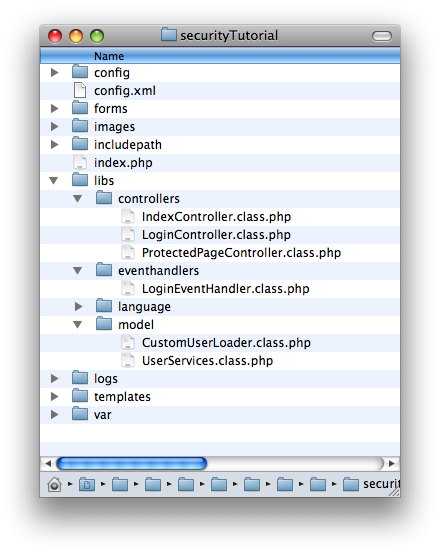
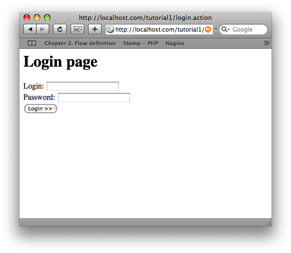
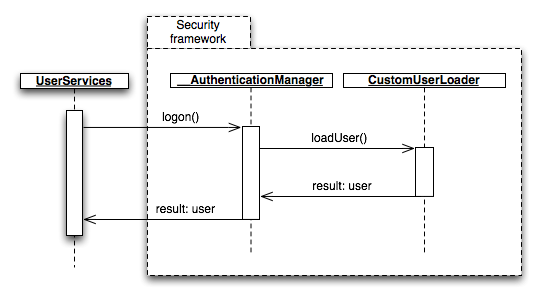
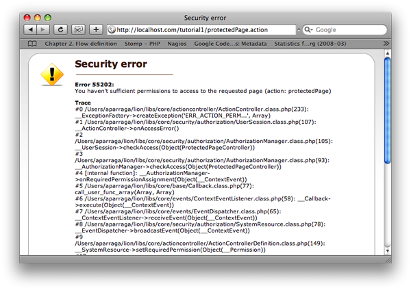
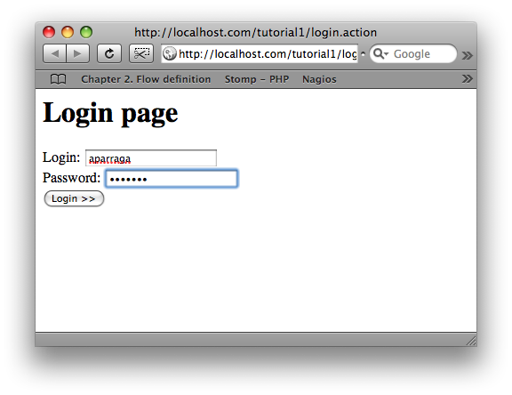
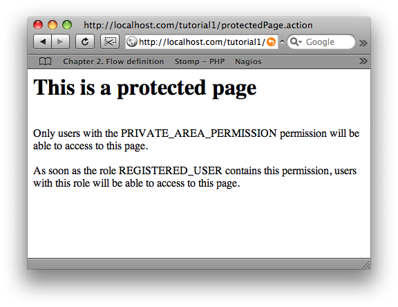
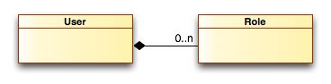

<table cellpadding="10" cellspacing="0" width="100%" border="0"><tr><td valign="top">
<div><a name=""></a><h1>PHP Login Tutorial</h1>
		<div class="ref-purpose">A really simple login/logout PHP application</div>
	<div class="ref-synopsis"><p><center><div class="messagebox note metadata plainlinks"><table style="width:100%; background:none"><tr><td width="60"></td><td><p>Note that all the source code used in this tutorial is available to <strong>download</strong> and to <strong>see in action</strong>:
					<ul><li><a href="http://bamboo.lionframework.org/download/LION-STABLE/artifacts/build-29/Deliverables/tutorial-php-login-1.4.29-stable.tgz">Download the source code</a></li>
						<li><a href="http://www.lionframework.org/tutorials/1.4.29-stable/tutorial-php-login">See the application in action</a></li></ul></p></td></tr></table></div></center></p></div>
<h2>Table of Contents</h2>
<ul>

<a href="../../Lion/Tutorials/tutorial_Lion.phpLogin.pkg.html#intro">Goal</a><br />

<a href="../../Lion/Tutorials/tutorial_Lion.phpLogin.pkg.html#defining_roles_and_permissions">Defining roles and permissions</a><br />

<a href="../../Lion/Tutorials/tutorial_Lion.phpLogin.pkg.html#the_login_page">The Login Page</a><br />

<a href="../../Lion/Tutorials/tutorial_Lion.phpLogin.pkg.html#login_event_handling">Login Event Handling</a><br />

<a href="../../Lion/Tutorials/tutorial_Lion.phpLogin.pkg.html#the_logon_model_service">The Login Model Service</a><br />

<a href="../../Lion/Tutorials/tutorial_Lion.phpLogin.pkg.html#protecting_pages">Protecting pages</a><br />

<a href="../../Lion/Tutorials/tutorial_Lion.phpLogin.pkg.html#executing_the_hello_world">Executing the application</a><br />

<a href="../../Lion/Tutorials/tutorial_Lion.phpLogin.pkg.html#retrieving_users_from_database">Retrieving users from a database</a><br />

<a href="../../Lion/Tutorials/tutorial_Lion.phpLogin.pkg.html#logout">How to perform a logout</a><br />
</ul>

	<p></p>
	<span><a name="intro"></a><h2>Goal</h2><p>The goal of this tutorial is to learn how to use Lion's security framework to build a typical login process using PHP.<br />
  These kinds of applications are really easy to develop but extremely hard to maintain in PHP without a solid and fine-grained security layer.</p>
		<p>In this tutorial we are going to:
			<ul><li>Build a login form and integrate it within the security framework</li>
				<li>Define roles and permissions</li>
				<li>Protect pages and sections to be accessible just by authenticated users</li></ul></p>
		<p>The application that we are going to develop will expose a login form, allowing users to attempt to login and authenticate themselves. We're going to also protect some pages in order to be accessible just by users that have permission to view the page.</p>
		<p>In the source code package, you will find the following directory structure and classes:</p>
		
		<p>Here's a summary of the classes we've defined in the example source code:
			<ul><li>2 controllers: one for the login page and one corresponding to a protected page.</li>
				<li>1 event handler: in charge of handling the submit from the login page</li>
				<li>2 model classes: one required by the security framework (the user loader) and the other one defining the model service we're going to consume from outside the model in order to perform the login</li></ul></p></span>
	<span><a name="defining_roles_and_permissions"></a><h2>Defining roles and permissions</h2><p>First, we want to define permission roles for our application. The concept of a role is similar to the concept of a user group. In fact, we use roles to group users having the same permissions.<br />
  i.e. we can define an ADMIN role, so all the users having this role will also have the same permissions.</p>
		<p>For the purpose of our tutorial, we are going to just define a single role: <strong>REGISTERED_USER</strong>.<br />
  A user with the <strong>REGISTERED_USER</strong> role will be considered a registered user.</p>
		<p>Once we have defined a role, we are then able to associate permissions with it. The concept of a permission is similar to the concept of a key that opens a door.<br />
  In our example, we are going to protect pages by only giving access to users having the correct permission, similar to a door accessible only for users having the key. <br /> 
  We define a single permission level called the <strong>PRIVATE_AREA_PERMISSION</strong> and we assign it to the <strong>REGISTERED_USER</strong> role.</p>
		<p>In order to define this role, let's take a look at the <strong>app/config/security.xml</strong> file:</p>
		<p><div class="listing"><pre><ol><li><div class="src-line"><span class="src-php">&lt;?</span><span class="src-id">xml&nbsp;version&nbsp;</span>=&nbsp;<span class="src-str">&quot;1.0&quot;&nbsp;</span><span class="src-id">standalone</span>=<span class="src-str">&quot;yes&quot;</span><span class="src-php">?&gt;</span></div></li>
<li><div class="src-line">&lt;configuration&gt;</div></li>
<li><div class="src-line">&nbsp;</div></li>
<li><div class="src-line">&nbsp;&nbsp;&lt;role-definitions&gt;</div></li>
<li><div class="src-line">&nbsp;&nbsp;</div></li>
<li><div class="src-line">&nbsp;&nbsp;&nbsp;&nbsp;&lt;!--&nbsp;REGISTERED_USER&nbsp;is&nbsp;a&nbsp;role&nbsp;for&nbsp;registered&nbsp;users&nbsp;--&gt;</div></li>
<li><div class="src-line">&nbsp;&nbsp;&nbsp;&nbsp;&lt;role&nbsp;id=&quot;REGISTERED_USER&quot;&gt;</div></li>
<li><div class="src-line">&nbsp;&nbsp;&nbsp;&nbsp;&nbsp;&nbsp;&lt;permissions&gt;</div></li>
<li><div class="src-line">&nbsp;&nbsp;&nbsp;&nbsp;&nbsp;&nbsp;&nbsp;&nbsp;&lt;permission&nbsp;id=&quot;PRIVATE_AREA_PERMISSION&quot;/&gt;</div></li>
<li><div class="src-line">&nbsp;&nbsp;&nbsp;&nbsp;&nbsp;&nbsp;&lt;/permissions&gt;</div></li>
<li><div class="src-line">&nbsp;&nbsp;&nbsp;&nbsp;&lt;/role&gt;</div></li>
<li><div class="src-line">&nbsp;</div></li>
<li><div class="src-line">&nbsp;&nbsp;&lt;/role-definitions&gt;</div></li>
<li><div class="src-line">&nbsp;&nbsp;</div></li>
<li><div class="src-line">&nbsp;&nbsp;&lt;permission-definitions&gt;</div></li>
<li><div class="src-line">&nbsp;&nbsp;</div></li>
<li><div class="src-line">&nbsp;&nbsp;&nbsp;&nbsp;&lt;!--&nbsp;PRIVATE_AREA_PERMISSION&nbsp;is&nbsp;the&nbsp;needed&nbsp;permission&nbsp;</div></li>
<li><div class="src-line">&nbsp;&nbsp;&nbsp;&nbsp;&nbsp;&nbsp;&nbsp;&nbsp;&nbsp;to&nbsp;be&nbsp;able&nbsp;to&nbsp;access&nbsp;to&nbsp;the&nbsp;private&nbsp;area&nbsp;of</div></li>
<li><div class="src-line">&nbsp;&nbsp;&nbsp;&nbsp;&nbsp;&nbsp;&nbsp;&nbsp;&nbsp;our&nbsp;website&nbsp;--&gt;</div></li>
<li><div class="src-line">&nbsp;&nbsp;&nbsp;&nbsp;&lt;permission&nbsp;id=&quot;PRIVATE_AREA_PERMISSION&quot;/&gt;&nbsp;&nbsp;</div></li>
<li><div class="src-line">&nbsp;&nbsp;&nbsp;&nbsp;</div></li>
<li><div class="src-line">&nbsp;&nbsp;&lt;/permission-definitions&gt;</div></li>
<li><div class="src-line">&nbsp;&nbsp;</div></li>
<li><div class="src-line">&lt;/configuration&gt;</div></li>
</ol></pre></div></p></span>
	<span><a name="the_login_page"></a><h2>The Login Page</h2><p>Let's use our knowledge we've gained from the earlier tutorials and add a login page to our web application. To do that, we'll add a controller and a template.</p>
		<p>The controller can be seen in the source code (<strong>/libs/controllers/LoginController.class.php</strong>):</p>
		<p><div class="listing"><pre><ol><li><div class="src-line"><span class="src-php">&lt;?php</span></div></li>
<li><div class="src-line">&nbsp;</div></li>
<li><div class="src-line"><span class="src-key">class&nbsp;</span><span class="src-id">LoginController&nbsp;</span><span class="src-key">extends&nbsp;</span><a href="../../ActionController/__ActionController.html">__ActionController</a>&nbsp;<span class="src-sym">{</span></div></li>
<li><div class="src-line">&nbsp;</div></li>
<li><div class="src-line">&nbsp;&nbsp;&nbsp;&nbsp;<span class="src-key">public&nbsp;</span><span class="src-key">function&nbsp;</span><span class="src-id">defaultAction</span><span class="src-sym">(</span><span class="src-sym">)&nbsp;</span><span class="src-sym">{</span></div></li>
<li><div class="src-line">&nbsp;&nbsp;&nbsp;&nbsp;&nbsp;&nbsp;&nbsp;&nbsp;<span class="src-key">return&nbsp;</span><span class="src-key">new&nbsp;</span><span class="src-id"><a href="../../Model/__ModelAndView.html">__ModelAndView</a></span><span class="src-sym">(</span><span class="src-str">'login'</span><span class="src-sym">)</span><span class="src-sym">;</span></div></li>
<li><div class="src-line">&nbsp;&nbsp;&nbsp;&nbsp;<span class="src-sym">}</span></div></li>
<li><div class="src-line">&nbsp;</div></li>
<li><div class="src-line"><span class="src-sym">}</span></div></li>
</ol></pre></div></p>
		<p>Since the controller returns a model and view referencing the view code <strong>login</strong>, we create a template with that name (<strong>/templates/login.tpl</strong>):</p>
		<p><div class="listing"><pre><ol><li><div class="src-line">&lt;<span class="src-id">h1</span>&gt;<span class="src-id">Login&nbsp;page</span>&lt;/<span class="src-id">h1</span>&gt;</div></li>
<li><div class="src-line">&lt;<span class="src-id">h2</span>&gt;&lt;<span class="src-id">font&nbsp;color</span>=<span class="src-str">&quot;red&quot;</span>&gt;&lt;<span class="src-id">comp</span>:<span class="src-id">label&nbsp;name</span>=<span class="src-str">&quot;error_label&quot;</span>/&gt;&lt;/<span class="src-id">font</span>&gt;&lt;/<span class="src-id">h2</span>&gt;</div></li>
<li><div class="src-line">&lt;<span class="src-id">comp</span>:<span class="src-id">form&nbsp;name</span>=<span class="src-str">&quot;login_form&quot;</span>&gt;</div></li>
<li><div class="src-line"><span class="src-id">Login</span>:&nbsp;&lt;<span class="src-id">comp</span>:<span class="src-id">inputbox&nbsp;name</span>=<span class="src-str">&quot;login&quot;</span>/&gt;&lt;<span class="src-id">br</span>&gt;</div></li>
<li><div class="src-line"><span class="src-id">Password</span>:&nbsp;&lt;<span class="src-id">comp</span>:<span class="src-id">inputbox&nbsp;name</span>=<span class="src-str">&quot;password&quot;&nbsp;</span><span class="src-id">type</span>=<span class="src-str">&quot;password&quot;</span>/&gt;</div></li>
<li><div class="src-line">&nbsp;</div></li>
<li><div class="src-line">&lt;<span class="src-id">br</span>&gt;&lt;<span class="src-id">comp</span>:<span class="src-id">commandbutton&nbsp;name</span>=<span class="src-str">&quot;submit&quot;&nbsp;</span><span class="src-id">caption</span>=<span class="src-str">&quot;Login&nbsp;&gt;&gt;&quot;&nbsp;</span><span class="src-id">type</span>=<span class="src-str">&quot;submit&quot;</span>/&gt;</div></li>
<li><div class="src-line">&lt;/<span class="src-id">comp</span>:<span class="src-id">form</span>&gt;</div></li>
<li><div class="src-line">&lt;<span class="src-id">br</span>&gt;&lt;<span class="src-id">br</span>&gt;</div></li>
<li><div class="src-line"><span class="src-sym">(</span><span class="src-id">user</span>:&nbsp;<span class="src-id">aparraga&nbsp;pass</span>:&nbsp;<span class="src-id">secret1</span><span class="src-sym">)</span></div></li>
<li><div class="src-line">&lt;<span class="src-id">comp</span>:<span class="src-id">validationrule&nbsp;component</span>=<span class="src-str">&quot;login&quot;&nbsp;</span><span class="src-id">maxLength</span>=<span class="src-str">&quot;10&quot;&nbsp;</span><span class="src-id">mandatory</span>=<span class="src-str">&quot;true&quot;</span>/&gt;</div></li>
<li><div class="src-line">&lt;<span class="src-id">comp</span>:<span class="src-id">validationrule&nbsp;component</span>=<span class="src-str">&quot;password&quot;&nbsp;</span><span class="src-id">maxLength</span>=<span class="src-str">&quot;20&quot;&nbsp;</span><span class="src-id">mandatory</span>=<span class="src-str">&quot;true&quot;</span>/&gt;</div></li>
</ol></pre></div></p>
		<p>Now, let's see how our login page is shown in a browser. To do that, just execute the url <strong>http://yourdomain/login.html</strong> within your browser:</p>
		
		<p>Suppose you want to add some validation checks to the user's input. Lion provides some very simple operations to achieve this.<br />
  In our example, we use the Component's <strong>validationrule</strong> to validate the login and password fields:
			<ul><li>Neither the login or password are blank (i.e. they are both mandatory)</li>
				<li>The login is not more than 10 characters nor is the password more than 20 characters</li></ul></p></span>
	<span><a name="login_event_handling"></a><h2>Login Event Handling</h2><p>The last stage of handling the login process is to define the <strong>submit</strong> event to actually login in the user. To handle the submission, we're going to define an event handler associated to the 'login' view.<br />
  Following the default naming convention, the event handler is named <strong>LoginEventHandler</strong> and is found in the file: <strong>/libs/eventhandler/LoginEventHandler.class.php</strong>:</p>
		<p><div class="listing"><pre><ol><li><div class="src-line"><span class="src-php">&lt;?php</span></div></li>
<li><div class="src-line">&nbsp;</div></li>
<li><div class="src-line"><span class="src-key">class&nbsp;</span><span class="src-id">LoginEventHandler&nbsp;</span><span class="src-key">extends&nbsp;</span><a href="../../ComponentModel/__EventHandler.html">__EventHandler</a>&nbsp;<span class="src-sym">{</span></div></li>
<li><div class="src-line">&nbsp;</div></li>
<li><div class="src-line">&nbsp;&nbsp;&nbsp;&nbsp;<span class="src-key">public&nbsp;</span><span class="src-key">function&nbsp;</span><span class="src-id">login_form_submit</span><span class="src-sym">(</span><span class="src-id">__UIEvent&nbsp;</span><span class="src-sym">&amp;</span><span class="src-var">$event</span><span class="src-sym">)&nbsp;</span><span class="src-sym">{</span></div></li>
<li><div class="src-line">&nbsp;&nbsp;&nbsp;&nbsp;</div></li>
<li><div class="src-line">&nbsp;&nbsp;&nbsp;&nbsp;&nbsp;&nbsp;&nbsp;&nbsp;<span class="src-comm">//retrieve&nbsp;the&nbsp;login&nbsp;and&nbsp;password&nbsp;from</span></div></li>
<li><div class="src-line">&nbsp;&nbsp;&nbsp;&nbsp;&nbsp;&nbsp;&nbsp;&nbsp;<span class="src-comm">//the&nbsp;components:</span></div></li>
<li><div class="src-line">&nbsp;&nbsp;&nbsp;&nbsp;&nbsp;&nbsp;&nbsp;&nbsp;<span class="src-var">$login&nbsp;</span>=&nbsp;<span class="src-var">$this</span><span class="src-sym">-&gt;</span><span class="src-id">getComponent</span><span class="src-sym">(</span><span class="src-str">'login'</span><span class="src-sym">)</span></div></li>
<li><div class="src-line">&nbsp;&nbsp;&nbsp;&nbsp;&nbsp;&nbsp;&nbsp;&nbsp;&nbsp;&nbsp;&nbsp;&nbsp;&nbsp;&nbsp;&nbsp;&nbsp;&nbsp;&nbsp;&nbsp;&nbsp;&nbsp;&nbsp;<span class="src-sym">-&gt;</span><span class="src-id">getValue</span><span class="src-sym">(</span><span class="src-sym">)</span><span class="src-sym">;</span></div></li>
<li><div class="src-line">&nbsp;&nbsp;&nbsp;&nbsp;&nbsp;&nbsp;&nbsp;&nbsp;<span class="src-var">$password&nbsp;</span>=&nbsp;<span class="src-var">$this</span><span class="src-sym">-&gt;</span><span class="src-id">getComponent</span><span class="src-sym">(</span><span class="src-str">'password'</span><span class="src-sym">)</span></div></li>
<li><div class="src-line">&nbsp;&nbsp;&nbsp;&nbsp;&nbsp;&nbsp;&nbsp;&nbsp;&nbsp;&nbsp;&nbsp;&nbsp;&nbsp;&nbsp;&nbsp;&nbsp;&nbsp;&nbsp;&nbsp;&nbsp;&nbsp;&nbsp;<span class="src-sym">-&gt;</span><span class="src-id">getValue</span><span class="src-sym">(</span><span class="src-sym">)</span><span class="src-sym">;</span></div></li>
<li><div class="src-line">&nbsp;</div></li>
<li><div class="src-line">&nbsp;&nbsp;&nbsp;&nbsp;&nbsp;&nbsp;&nbsp;&nbsp;<span class="src-comm">//try&nbsp;to&nbsp;authenticate&nbsp;the&nbsp;user:</span></div></li>
<li><div class="src-line">&nbsp;&nbsp;&nbsp;&nbsp;&nbsp;&nbsp;&nbsp;&nbsp;<span class="src-key">if</span><span class="src-sym">(</span><span class="src-id"><a href="../../Model/__ModelProxy.html">__ModelProxy</a></span><span class="src-sym">::</span><a href="../../Model/__ModelProxy.html#methodgetInstance">getInstance</a><span class="src-sym">(</span><span class="src-sym">)</span></div></li>
<li><div class="src-line">&nbsp;&nbsp;&nbsp;&nbsp;&nbsp;&nbsp;&nbsp;&nbsp;&nbsp;&nbsp;&nbsp;<span class="src-sym">-&gt;</span><span class="src-id">logon</span><span class="src-sym">(</span><span class="src-var">$login</span><span class="src-sym">,&nbsp;</span><span class="src-var">$password</span><span class="src-sym">))&nbsp;</span><span class="src-sym">{</span></div></li>
<li><div class="src-line">&nbsp;&nbsp;&nbsp;&nbsp;&nbsp;&nbsp;&nbsp;&nbsp;&nbsp;&nbsp;&nbsp;&nbsp;<span class="src-comm">//redirect&nbsp;the&nbsp;user&nbsp;to&nbsp;the&nbsp;private&nbsp;page:</span></div></li>
<li><div class="src-line">&nbsp;&nbsp;&nbsp;&nbsp;&nbsp;&nbsp;&nbsp;&nbsp;&nbsp;&nbsp;&nbsp;&nbsp;<span class="src-var">$private_page_uri&nbsp;</span>=&nbsp;<span class="src-id"><a href="../../UrlRoutingEngine/__UriFactory.html">__UriFactory</a></span><span class="src-sym">::</span><a href="../../UrlRoutingEngine/__UriFactory.html#methodgetInstance">getInstance</a><span class="src-sym">(</span><span class="src-sym">)</span></div></li>
<li><div class="src-line">&nbsp;&nbsp;&nbsp;&nbsp;&nbsp;&nbsp;&nbsp;&nbsp;&nbsp;&nbsp;&nbsp;&nbsp;&nbsp;&nbsp;&nbsp;&nbsp;&nbsp;&nbsp;&nbsp;&nbsp;&nbsp;&nbsp;<span class="src-sym">-&gt;</span><span class="src-id">createUri</span><span class="src-sym">(</span><span class="src-sym">)</span><span class="src-sym">-&gt;</span><span class="src-id">setRoute</span><span class="src-sym">(</span><span class="src-str">'default'</span><span class="src-sym">)</span></div></li>
<li><div class="src-line">&nbsp;&nbsp;&nbsp;&nbsp;&nbsp;&nbsp;&nbsp;&nbsp;&nbsp;&nbsp;&nbsp;&nbsp;&nbsp;&nbsp;&nbsp;&nbsp;&nbsp;&nbsp;&nbsp;&nbsp;&nbsp;&nbsp;<span class="src-sym">-&gt;</span><span class="src-id">setController</span><span class="src-sym">(</span><span class="src-str">'protectedPage'</span><span class="src-sym">)</span><span class="src-sym">;</span></div></li>
<li><div class="src-line">&nbsp;&nbsp;&nbsp;&nbsp;&nbsp;&nbsp;&nbsp;&nbsp;&nbsp;&nbsp;&nbsp;&nbsp;<span class="src-id"><a href="../../FrontController/__FrontController.html">__FrontController</a></span><span class="src-sym">::</span><a href="../../FrontController/__FrontController.html#methodgetInstance">getInstance</a><span class="src-sym">(</span><span class="src-sym">)</span></div></li>
<li><div class="src-line">&nbsp;&nbsp;&nbsp;&nbsp;&nbsp;&nbsp;&nbsp;&nbsp;&nbsp;&nbsp;&nbsp;&nbsp;&nbsp;&nbsp;&nbsp;&nbsp;&nbsp;&nbsp;&nbsp;&nbsp;&nbsp;&nbsp;<span class="src-sym">-&gt;</span><span class="src-id">forward</span><span class="src-sym">(</span><span class="src-var">$private_page_uri</span><span class="src-sym">)</span><span class="src-sym">;&nbsp;&nbsp;&nbsp;&nbsp;&nbsp;&nbsp;&nbsp;&nbsp;&nbsp;&nbsp;&nbsp;&nbsp;&nbsp;&nbsp;&nbsp;&nbsp;&nbsp;&nbsp;&nbsp;&nbsp;&nbsp;&nbsp;</span></div></li>
<li><div class="src-line">&nbsp;&nbsp;&nbsp;&nbsp;&nbsp;&nbsp;&nbsp;&nbsp;<span class="src-sym">}</span></div></li>
<li><div class="src-line">&nbsp;&nbsp;&nbsp;&nbsp;&nbsp;&nbsp;&nbsp;&nbsp;<span class="src-key">else&nbsp;</span><span class="src-sym">{</span></div></li>
<li><div class="src-line">&nbsp;&nbsp;&nbsp;&nbsp;&nbsp;&nbsp;&nbsp;&nbsp;&nbsp;&nbsp;&nbsp;&nbsp;<span class="src-var">$this</span><span class="src-sym">-&gt;</span><span class="src-id">getComponent</span><span class="src-sym">(</span><span class="src-str">'error_label'</span><span class="src-sym">)</span></div></li>
<li><div class="src-line">&nbsp;&nbsp;&nbsp;&nbsp;&nbsp;&nbsp;&nbsp;&nbsp;&nbsp;&nbsp;&nbsp;&nbsp;&nbsp;&nbsp;&nbsp;&nbsp;&nbsp;<span class="src-sym">-&gt;</span><span class="src-id">setText</span><span class="src-sym">(</span><span class="src-str">'Wrong&nbsp;username&nbsp;or&nbsp;password'</span><span class="src-sym">)</span><span class="src-sym">;</span></div></li>
<li><div class="src-line">&nbsp;&nbsp;&nbsp;&nbsp;&nbsp;&nbsp;&nbsp;&nbsp;<span class="src-sym">}</span></div></li>
<li><div class="src-line">&nbsp;&nbsp;&nbsp;&nbsp;&nbsp;&nbsp;&nbsp;&nbsp;&nbsp;&nbsp;&nbsp;&nbsp;&nbsp;&nbsp;&nbsp;&nbsp;&nbsp;&nbsp;&nbsp;&nbsp;&nbsp;&nbsp;</div></li>
<li><div class="src-line">&nbsp;&nbsp;&nbsp;&nbsp;<span class="src-sym">}</span></div></li>
<li><div class="src-line">&nbsp;</div></li>
<li><div class="src-line"><span class="src-sym">}</span></div></li>
</ol></pre></div></p>
		<p>When the submit event happens and the form is submitted, Lion will intercept the call and the validation steps, mentioned above, will be done on the server side.<br />
  The values contained in the login and password components will contain the user's input.</p>
		<p>This can all be seen in lines 7-10 in the <strong>LoginEventHandler</strong> class, where we retrieve both values from the components and pass them to the login model service.</p></span>

	<span><a name="the_logon_model_service"></a><h2>The Login Model Service</h2><p>From the previous section, we see how Lion intercepts a login submission from a user. <br />
  If you follow the code seen in <strong>/libs/eventhandler/LoginEventHandler.class.php</strong>, you will notice we use Lion's Model Service (which hopefully you have already read about).<br />
  By utilizing Lion's Model Service, we abstract away which class is doing all of the work, so there's no need for an explicit &quot;new ...&quot; call.</p>
		<p>If you recall, we define our Model Services by creating the information in our <strong>/app/config/model_services.xml</strong> file:</p>
		<p><div class="listing"><pre><ol><li><div class="src-line"><span class="src-php">&lt;?</span><span class="src-id">xml&nbsp;version&nbsp;</span>=&nbsp;<span class="src-str">&quot;1.0&quot;&nbsp;</span><span class="src-id">standalone</span>=<span class="src-str">&quot;yes&quot;</span><span class="src-php">?&gt;</span></div></li>
<li><div class="src-line">&nbsp;</div></li>
<li><div class="src-line">&lt;configuration&gt;</div></li>
<li><div class="src-line">&nbsp;</div></li>
<li><div class="src-line">&nbsp;&nbsp;&lt;model-services&gt;</div></li>
<li><div class="src-line">&nbsp;</div></li>
<li><div class="src-line">&nbsp;&nbsp;&nbsp;&nbsp;&lt;class&nbsp;name=&quot;UserServices&quot;&gt;</div></li>
<li><div class="src-line">&nbsp;&nbsp;&nbsp;&nbsp;&nbsp;&nbsp;&lt;service&nbsp;name&nbsp;=&nbsp;&quot;logon&quot;&nbsp;</div></li>
<li><div class="src-line">&nbsp;&nbsp;&nbsp;&nbsp;&nbsp;&nbsp;&nbsp;class-method&nbsp;=&nbsp;&quot;logon&quot;/&gt;</div></li>
<li><div class="src-line">&nbsp;&nbsp;&nbsp;&nbsp;&lt;/class&gt;</div></li>
<li><div class="src-line">&nbsp;&nbsp;&nbsp;</div></li>
<li><div class="src-line">&nbsp;&nbsp;&lt;/model-services&gt;</div></li>
<li><div class="src-line">&nbsp;&nbsp;</div></li>
<li><div class="src-line">&lt;/configuration&gt;</div></li>
</ol></pre></div></p>
		<p>Now, we need to create this <strong>UserServices</strong> class in order to declare a <i>bridge</i> method to perform the actual logon.</p>
		<p><div class="listing"><pre><ol><li><div class="src-line"><span class="src-php">&lt;?php</span></div></li>
<li><div class="src-line">&nbsp;</div></li>
<li><div class="src-line"><span class="src-key">class&nbsp;</span><span class="src-id">UserServices&nbsp;</span><span class="src-sym">{</span></div></li>
<li><div class="src-line">&nbsp;</div></li>
<li><div class="src-line">&nbsp;&nbsp;&nbsp;&nbsp;<span class="src-key">public&nbsp;</span><span class="src-key">function&nbsp;</span><span class="src-id">logon</span><span class="src-sym">(</span><span class="src-var">$login</span><span class="src-sym">,&nbsp;</span><span class="src-var">$password</span><span class="src-sym">)&nbsp;</span><span class="src-sym">{</span></div></li>
<li><div class="src-line">&nbsp;&nbsp;&nbsp;&nbsp;</div></li>
<li><div class="src-line">&nbsp;&nbsp;&nbsp;&nbsp;&nbsp;&nbsp;&nbsp;&nbsp;<span class="src-comm">//set&nbsp;both&nbsp;the&nbsp;user&nbsp;identity&nbsp;and&nbsp;the</span></div></li>
<li><div class="src-line">&nbsp;&nbsp;&nbsp;&nbsp;&nbsp;&nbsp;&nbsp;&nbsp;<span class="src-comm">//credentials&nbsp;with&nbsp;given&nbsp;login&nbsp;and&nbsp;password:</span></div></li>
<li><div class="src-line">&nbsp;&nbsp;&nbsp;&nbsp;&nbsp;&nbsp;&nbsp;&nbsp;<span class="src-var">$user_identity&nbsp;</span>=&nbsp;<span class="src-key">new&nbsp;</span><span class="src-id"><a href="../../Security/__UsernameIdentity.html">__UsernameIdentity</a></span><span class="src-sym">(</span><span class="src-sym">)</span><span class="src-sym">;</span></div></li>
<li><div class="src-line">&nbsp;&nbsp;&nbsp;&nbsp;&nbsp;&nbsp;&nbsp;&nbsp;<span class="src-var">$user_identity</span><span class="src-sym">-&gt;</span><span class="src-id">setUsername</span><span class="src-sym">(</span><span class="src-var">$login</span><span class="src-sym">)</span><span class="src-sym">;</span></div></li>
<li><div class="src-line">&nbsp;&nbsp;&nbsp;&nbsp;&nbsp;&nbsp;&nbsp;&nbsp;<span class="src-var">$credentials&nbsp;</span>=&nbsp;<span class="src-key">new&nbsp;</span><span class="src-id"><a href="../../Security/__PasswordCredentials.html">__PasswordCredentials</a></span><span class="src-sym">(</span><span class="src-sym">)</span><span class="src-sym">;</span></div></li>
<li><div class="src-line">&nbsp;&nbsp;&nbsp;&nbsp;&nbsp;&nbsp;&nbsp;&nbsp;<span class="src-var">$credentials</span><span class="src-sym">-&gt;</span><span class="src-id">setPassword</span><span class="src-sym">(</span><span class="src-var">$password</span><span class="src-sym">)</span><span class="src-sym">;</span></div></li>
<li><div class="src-line">&nbsp;&nbsp;&nbsp;&nbsp;&nbsp;&nbsp;&nbsp;&nbsp;</div></li>
<li><div class="src-line">&nbsp;&nbsp;&nbsp;&nbsp;&nbsp;&nbsp;&nbsp;&nbsp;<span class="src-comm">//call&nbsp;the&nbsp;authentication&nbsp;manager&nbsp;in&nbsp;order&nbsp;to&nbsp;</span></div></li>
<li><div class="src-line">&nbsp;&nbsp;&nbsp;&nbsp;&nbsp;&nbsp;&nbsp;&nbsp;<span class="src-comm">//authenticate&nbsp;the&nbsp;user:</span></div></li>
<li><div class="src-line">&nbsp;&nbsp;&nbsp;&nbsp;&nbsp;&nbsp;&nbsp;&nbsp;<span class="src-var">$return_value&nbsp;</span>=&nbsp;<span class="src-id"><a href="../../Security/__AuthenticationManager.html">__AuthenticationManager</a></span><span class="src-sym">::</span><a href="../../Security/__AuthenticationManager.html#methodgetInstance">getInstance</a><span class="src-sym">(</span><span class="src-sym">)</span></div></li>
<li><div class="src-line">&nbsp;&nbsp;&nbsp;&nbsp;&nbsp;&nbsp;&nbsp;&nbsp;&nbsp;&nbsp;&nbsp;&nbsp;&nbsp;&nbsp;&nbsp;&nbsp;&nbsp;&nbsp;&nbsp;&nbsp;&nbsp;&nbsp;&nbsp;&nbsp;<span class="src-sym">-&gt;</span><span class="src-id">logon</span><span class="src-sym">(</span><span class="src-var">$user_identity</span><span class="src-sym">,&nbsp;</span><span class="src-var">$credentials</span><span class="src-sym">)</span><span class="src-sym">;</span></div></li>
<li><div class="src-line">&nbsp;&nbsp;&nbsp;&nbsp;&nbsp;&nbsp;&nbsp;&nbsp;&nbsp;&nbsp;&nbsp;&nbsp;&nbsp;&nbsp;&nbsp;&nbsp;&nbsp;&nbsp;&nbsp;&nbsp;&nbsp;&nbsp;&nbsp;&nbsp;</div></li>
<li><div class="src-line">&nbsp;&nbsp;&nbsp;&nbsp;&nbsp;&nbsp;&nbsp;&nbsp;<span class="src-key">return&nbsp;</span><span class="src-var">$return_value</span><span class="src-sym">;</span></div></li>
<li><div class="src-line">&nbsp;&nbsp;&nbsp;&nbsp;<span class="src-sym">}</span></div></li>
<li><div class="src-line">&nbsp;&nbsp;&nbsp;&nbsp;</div></li>
<li><div class="src-line"><span class="src-sym">}</span></div></li>
</ol></pre></div></p>
		<p>In our <strong>UserServices</strong> class, we make a call into Lion's <a href="../../Security/__AuthenticationManager.html#methodlogon">__AuthenticationManager::logon()</a> method. <br />
  In just a moment, we will see how to setup our configurations and classes to actually do <strong>our own</strong> user authentication, but first let's conceptualize the process visually:</p>
		
		<p>At this point, if you still have not read about Lion's Authentication section, it is highly recommended to do so: <a href="../../Security/tutorial_Authentication.pkg.html">Authentication in Lion</a>.<br />
  We need some way to tell Lion about which class will be handling our authentication. Thus, we integrate our user loader as the user loader used by the security framework to logon users.<br />
  The only thing we have to do is setup the <strong>/app/config/context.xml</strong> by setting the following configuration:</p>
		<p><div class="listing"><pre><ol><li><div class="src-line"><span class="src-php">&lt;?</span><span class="src-id">xml&nbsp;version&nbsp;</span>=&nbsp;<span class="src-str">&quot;1.0&quot;&nbsp;</span><span class="src-id">standalone</span>=<span class="src-str">&quot;yes&quot;</span><span class="src-php">?&gt;</span></div></li>
<li><div class="src-line">&lt;configuration&gt;</div></li>
<li><div class="src-line">&nbsp;</div></li>
<li><div class="src-line">&nbsp;&nbsp;&lt;context-instances&gt;</div></li>
<li><div class="src-line">&nbsp;</div></li>
<li><div class="src-line">&nbsp;&nbsp;&nbsp;&nbsp;&lt;context-instance&nbsp;id=&quot;authorizationManager&quot;&nbsp;class=&quot;__AuthorizationManager&quot;/&gt;</div></li>
<li><div class="src-line">&nbsp;</div></li>
<li><div class="src-line">&nbsp;&nbsp;&nbsp;&nbsp;&lt;context-instance&nbsp;id=&quot;authenticationManager&quot;&nbsp;class=&quot;__AuthenticationManager&quot;&gt;</div></li>
<li><div class="src-line">&nbsp;&nbsp;&nbsp;&nbsp;&nbsp;&nbsp;&lt;property&nbsp;name=&quot;authenticators&quot;&gt;</div></li>
<li><div class="src-line">&nbsp;&nbsp;&nbsp;&nbsp;&nbsp;&nbsp;&nbsp;&nbsp;&lt;list&gt;</div></li>
<li><div class="src-line">&nbsp;&nbsp;&nbsp;&nbsp;&nbsp;&nbsp;&nbsp;&nbsp;&nbsp;&nbsp;&lt;ref&nbsp;id=&quot;authenticator&quot;/&gt;</div></li>
<li><div class="src-line">&nbsp;&nbsp;&nbsp;&nbsp;&nbsp;&nbsp;&nbsp;&nbsp;&lt;/list&gt;</div></li>
<li><div class="src-line">&nbsp;&nbsp;&nbsp;&nbsp;&nbsp;&nbsp;&lt;/property&gt;</div></li>
<li><div class="src-line">&nbsp;&nbsp;&nbsp;&nbsp;&lt;/context-instance&gt;</div></li>
<li><div class="src-line">&nbsp;</div></li>
<li><div class="src-line">&nbsp;&nbsp;&nbsp;&nbsp;&lt;context-instance&nbsp;id=&quot;authenticator&quot;&nbsp;class=&quot;__Authenticator&quot;&gt;</div></li>
<li><div class="src-line">&nbsp;&nbsp;&nbsp;&nbsp;&nbsp;&nbsp;&lt;property&nbsp;name=&quot;userLoader&quot;&gt;</div></li>
<li><div class="src-line">&nbsp;&nbsp;&nbsp;&nbsp;&nbsp;&nbsp;&nbsp;&nbsp;&lt;ref&nbsp;id=&quot;userLoader&quot;/&gt;</div></li>
<li><div class="src-line">&nbsp;&nbsp;&nbsp;&nbsp;&nbsp;&nbsp;&lt;/property&gt;</div></li>
<li><div class="src-line">&nbsp;&nbsp;&nbsp;&nbsp;&lt;/context-instance&gt;</div></li>
<li><div class="src-line">&nbsp;&nbsp;&nbsp;&nbsp;</div></li>
<li><div class="src-line">&nbsp;&nbsp;&nbsp;&nbsp;&lt;!--&nbsp;Set&nbsp;our&nbsp;custom&nbsp;user&nbsp;loader&nbsp;as&nbsp;the&nbsp;</div></li>
<li><div class="src-line">&nbsp;&nbsp;&nbsp;&nbsp;&nbsp;&nbsp;&nbsp;&nbsp;&nbsp;authentication&nbsp;user&nbsp;loader:&nbsp;--&gt;</div></li>
<li><div class="src-line">&nbsp;&nbsp;&nbsp;&nbsp;&lt;context-instance&nbsp;id=&quot;userLoader&quot;&nbsp;class=&quot;CustomUserLoader&quot;/&gt;</div></li>
<li><div class="src-line">&nbsp;&nbsp;&nbsp;&nbsp;</div></li>
<li><div class="src-line">&nbsp;&nbsp;&lt;/context-instances&gt;</div></li>
<li><div class="src-line">&nbsp;&nbsp;</div></li>
<li><div class="src-line">&lt;/configuration&gt;</div></li>
</ol></pre></div></p>
		<p>In our example, we will construct our own <strong>user loader</strong> class that implements the <a href="../../Security/__IUserLoader.html">__IUserLoader</a> interface, which requires you to implement the <a href="../../Security/__IUserLoader.html#methodloadUser">__IUserLoader::loadUser()</a> method.<br />
  This is what will be called by Lion's Authentication Framework.</p>
		<p>Let's take a look at our user loader implementation in the <strong>/libs/model/CustomUserLoader.class.php</strong>:</p>
		<p><div class="listing"><pre><ol><li><div class="src-line"><span class="src-php">&lt;?php</span></div></li>
<li><div class="src-line">&nbsp;</div></li>
<li><div class="src-line"><span class="src-key">class&nbsp;</span><span class="src-id">CustomUserLoader&nbsp;</span><span class="src-key">implements&nbsp;</span><span class="src-id">__IUserLoader&nbsp;</span><span class="src-sym">{</span></div></li>
<li><div class="src-line">&nbsp;&nbsp;&nbsp;&nbsp;</div></li>
<li><div class="src-line">&nbsp;&nbsp;&nbsp;&nbsp;<span class="src-comm">//valid&nbsp;login&nbsp;and&nbsp;passwords:</span></div></li>
<li><div class="src-line">&nbsp;&nbsp;&nbsp;&nbsp;<span class="src-key">private&nbsp;</span><span class="src-var">$_user_and_passwords&nbsp;</span>=&nbsp;<span class="src-key">array</span><span class="src-sym">(</span></div></li>
<li><div class="src-line">&nbsp;&nbsp;&nbsp;&nbsp;&nbsp;&nbsp;&nbsp;&nbsp;<span class="src-str">'aparraga'&nbsp;</span>=&gt;&nbsp;<span class="src-str">'secret1'</span><span class="src-sym">,</span></div></li>
<li><div class="src-line">&nbsp;&nbsp;&nbsp;&nbsp;&nbsp;&nbsp;&nbsp;&nbsp;<span class="src-str">'ckop'&nbsp;&nbsp;&nbsp;&nbsp;&nbsp;</span>=&gt;&nbsp;<span class="src-str">'secret2'</span><span class="src-sym">,</span></div></li>
<li><div class="src-line">&nbsp;&nbsp;&nbsp;&nbsp;&nbsp;&nbsp;&nbsp;&nbsp;<span class="src-str">'dparraga'&nbsp;</span>=&gt;&nbsp;<span class="src-str">'secret3'</span><span class="src-sym">,</span></div></li>
<li><div class="src-line">&nbsp;&nbsp;&nbsp;&nbsp;&nbsp;&nbsp;&nbsp;&nbsp;<span class="src-str">'goofy'&nbsp;&nbsp;&nbsp;&nbsp;</span>=&gt;&nbsp;<span class="src-str">'secret4'</span></div></li>
<li><div class="src-line">&nbsp;&nbsp;&nbsp;&nbsp;<span class="src-sym">)</span><span class="src-sym">;</span></div></li>
<li><div class="src-line">&nbsp;</div></li>
<li><div class="src-line">&nbsp;&nbsp;&nbsp;&nbsp;<span class="src-doc">/**</span></div></li>
<li><div class="src-line"><span class="src-doc">&nbsp;&nbsp;&nbsp;&nbsp;&nbsp;*&nbsp;Get&nbsp;the&nbsp;user&nbsp;identity&nbsp;and&nbsp;returns&nbsp;a&nbsp;user&nbsp;corresponding</span></div></li>
<li><div class="src-line"><span class="src-doc">&nbsp;&nbsp;&nbsp;&nbsp;&nbsp;*&nbsp;to&nbsp;the&nbsp;given&nbsp;identity.</span></div></li>
<li><div class="src-line"><span class="src-doc">&nbsp;&nbsp;&nbsp;&nbsp;&nbsp;*&nbsp;</span></div></li>
<li><div class="src-line"><span class="src-doc">&nbsp;&nbsp;&nbsp;&nbsp;&nbsp;*&nbsp;Note&nbsp;that&nbsp;the&nbsp;returned&nbsp;user&nbsp;contains&nbsp;his</span></div></li>
<li><div class="src-line"><span class="src-doc">&nbsp;&nbsp;&nbsp;&nbsp;&nbsp;*&nbsp;credentials&nbsp;in&nbsp;order&nbsp;to&nbsp;be&nbsp;used&nbsp;by&nbsp;the&nbsp;security</span></div></li>
<li><div class="src-line"><span class="src-doc">&nbsp;&nbsp;&nbsp;&nbsp;&nbsp;*&nbsp;framework</span></div></li>
<li><div class="src-line"><span class="src-doc">&nbsp;&nbsp;&nbsp;&nbsp;&nbsp;*&nbsp;</span></div></li>
<li><div class="src-line"><span class="src-doc">&nbsp;&nbsp;&nbsp;&nbsp;&nbsp;*/</span></div></li>
<li><div class="src-line">&nbsp;&nbsp;&nbsp;&nbsp;<span class="src-key">public&nbsp;</span><span class="src-key">function&nbsp;</span><span class="src-sym">&amp;</span><span class="src-id">loadUser</span><span class="src-sym">(</span><span class="src-id">__IUserIdentity&nbsp;</span><span class="src-var">$user_identity</span><span class="src-sym">)&nbsp;</span><span class="src-sym">{</span></div></li>
<li><div class="src-line">&nbsp;&nbsp;&nbsp;&nbsp;&nbsp;&nbsp;&nbsp;&nbsp;<span class="src-var">$user&nbsp;</span>=&nbsp;<span class="src-id">null</span><span class="src-sym">;</span></div></li>
<li><div class="src-line">&nbsp;&nbsp;&nbsp;&nbsp;&nbsp;&nbsp;&nbsp;&nbsp;<span class="src-key">if</span><span class="src-sym">(</span><span class="src-var">$user_identity&nbsp;</span>instanceof&nbsp;<span class="src-id"><a href="../../Security/__UsernameIdentity.html">__UsernameIdentity</a></span><span class="src-sym">)&nbsp;</span><span class="src-sym">{</span></div></li>
<li><div class="src-line">&nbsp;&nbsp;&nbsp;&nbsp;&nbsp;&nbsp;&nbsp;&nbsp;&nbsp;&nbsp;&nbsp;&nbsp;<span class="src-comm">//get&nbsp;the&nbsp;login&nbsp;string&nbsp;from&nbsp;the&nbsp;user&nbsp;identity:</span></div></li>
<li><div class="src-line">&nbsp;&nbsp;&nbsp;&nbsp;&nbsp;&nbsp;&nbsp;&nbsp;&nbsp;&nbsp;&nbsp;&nbsp;<span class="src-var">$login&nbsp;</span>=&nbsp;<span class="src-var">$user_identity</span><span class="src-sym">-&gt;</span><span class="src-id">getUsername</span><span class="src-sym">(</span><span class="src-sym">)</span><span class="src-sym">;</span></div></li>
<li><div class="src-line">&nbsp;&nbsp;&nbsp;&nbsp;&nbsp;&nbsp;&nbsp;&nbsp;&nbsp;&nbsp;&nbsp;&nbsp;<span class="src-comm">//check&nbsp;if&nbsp;the&nbsp;login&nbsp;correspond&nbsp;to&nbsp;any&nbsp;of&nbsp;our</span></div></li>
<li><div class="src-line">&nbsp;&nbsp;&nbsp;&nbsp;&nbsp;&nbsp;&nbsp;&nbsp;&nbsp;&nbsp;&nbsp;&nbsp;<span class="src-comm">//valid&nbsp;logins:</span></div></li>
<li><div class="src-line">&nbsp;&nbsp;&nbsp;&nbsp;&nbsp;&nbsp;&nbsp;&nbsp;&nbsp;&nbsp;&nbsp;&nbsp;<span class="src-key">if</span><span class="src-sym">(</span><a href="http://www.php.net/key_exists">key_exists</a><span class="src-sym">(</span><span class="src-var">$login</span><span class="src-sym">,&nbsp;</span><span class="src-var">$this</span><span class="src-sym">-&gt;</span><span class="src-var">_user_and_passwords</span><span class="src-sym">))&nbsp;</span><span class="src-sym">{</span></div></li>
<li><div class="src-line">&nbsp;&nbsp;&nbsp;&nbsp;&nbsp;&nbsp;&nbsp;&nbsp;&nbsp;&nbsp;&nbsp;&nbsp;&nbsp;&nbsp;&nbsp;&nbsp;<span class="src-comm">//create&nbsp;a&nbsp;user&nbsp;instance&nbsp;and&nbsp;set&nbsp;the&nbsp;credentials:</span></div></li>
<li><div class="src-line">&nbsp;&nbsp;&nbsp;&nbsp;&nbsp;&nbsp;&nbsp;&nbsp;&nbsp;&nbsp;&nbsp;&nbsp;&nbsp;&nbsp;&nbsp;&nbsp;<span class="src-var">$user&nbsp;</span>=&nbsp;<span class="src-key">new&nbsp;</span><span class="src-id"><a href="../../Security/__User.html">__User</a></span><span class="src-sym">(</span><span class="src-sym">)</span><span class="src-sym">;</span></div></li>
<li><div class="src-line">&nbsp;&nbsp;&nbsp;&nbsp;&nbsp;&nbsp;&nbsp;&nbsp;&nbsp;&nbsp;&nbsp;&nbsp;&nbsp;&nbsp;&nbsp;&nbsp;<span class="src-var">$credentials&nbsp;&nbsp;</span>=&nbsp;<span class="src-key">new&nbsp;</span><span class="src-id"><a href="../../Security/__PasswordCredentials.html">__PasswordCredentials</a></span><span class="src-sym">(</span><span class="src-sym">)</span><span class="src-sym">;</span></div></li>
<li><div class="src-line">&nbsp;&nbsp;&nbsp;&nbsp;&nbsp;&nbsp;&nbsp;&nbsp;&nbsp;&nbsp;&nbsp;&nbsp;&nbsp;&nbsp;&nbsp;&nbsp;<span class="src-var">$credentials</span><span class="src-sym">-&gt;</span><span class="src-id">setPassword</span></div></li>
<li><div class="src-line">&nbsp;&nbsp;&nbsp;&nbsp;&nbsp;&nbsp;&nbsp;&nbsp;&nbsp;&nbsp;&nbsp;&nbsp;&nbsp;&nbsp;&nbsp;&nbsp;&nbsp;&nbsp;&nbsp;&nbsp;&nbsp;&nbsp;&nbsp;&nbsp;&nbsp;&nbsp;&nbsp;&nbsp;&nbsp;&nbsp;<span class="src-sym">(</span><span class="src-var">$this</span><span class="src-sym">-&gt;</span><span class="src-var">_user_and_passwords</span><span class="src-sym">[</span><span class="src-var">$login</span><span class="src-sym">]</span><span class="src-sym">)</span><span class="src-sym">;</span></div></li>
<li><div class="src-line">&nbsp;&nbsp;&nbsp;&nbsp;&nbsp;&nbsp;&nbsp;&nbsp;&nbsp;&nbsp;&nbsp;&nbsp;&nbsp;&nbsp;&nbsp;&nbsp;<span class="src-var">$user</span><span class="src-sym">-&gt;</span><span class="src-id">setCredentials</span><span class="src-sym">(</span><span class="src-var">$credentials</span><span class="src-sym">)</span><span class="src-sym">;</span></div></li>
<li><div class="src-line">&nbsp;&nbsp;&nbsp;&nbsp;&nbsp;&nbsp;&nbsp;&nbsp;&nbsp;&nbsp;&nbsp;&nbsp;&nbsp;&nbsp;&nbsp;&nbsp;</div></li>
<li><div class="src-line">&nbsp;&nbsp;&nbsp;&nbsp;&nbsp;&nbsp;&nbsp;&nbsp;&nbsp;&nbsp;&nbsp;&nbsp;&nbsp;&nbsp;&nbsp;&nbsp;<span class="src-comm">//get&nbsp;the&nbsp;role&nbsp;identified&nbsp;as&nbsp;REGISTERED_USER:</span></div></li>
<li><div class="src-line">&nbsp;&nbsp;&nbsp;&nbsp;&nbsp;&nbsp;&nbsp;&nbsp;&nbsp;&nbsp;&nbsp;&nbsp;&nbsp;&nbsp;&nbsp;&nbsp;<span class="src-var">$role&nbsp;</span>=&nbsp;<span class="src-id"><a href="../../Security/__RoleManager.html">__RoleManager</a></span><span class="src-sym">::</span><a href="../../Security/__RoleManager.html#methodgetInstance">getInstance</a><span class="src-sym">(</span><span class="src-sym">)</span></div></li>
<li><div class="src-line">&nbsp;&nbsp;&nbsp;&nbsp;&nbsp;&nbsp;&nbsp;&nbsp;&nbsp;&nbsp;&nbsp;&nbsp;&nbsp;&nbsp;&nbsp;&nbsp;&nbsp;&nbsp;&nbsp;&nbsp;&nbsp;&nbsp;&nbsp;&nbsp;&nbsp;&nbsp;&nbsp;&nbsp;&nbsp;&nbsp;&nbsp;&nbsp;&nbsp;&nbsp;&nbsp;&nbsp;&nbsp;<span class="src-sym">-&gt;</span><span class="src-id">getRole</span><span class="src-sym">(</span><span class="src-str">'REGISTERED_USER'</span><span class="src-sym">)</span><span class="src-sym">;</span></div></li>
<li><div class="src-line">&nbsp;&nbsp;&nbsp;&nbsp;&nbsp;&nbsp;&nbsp;&nbsp;&nbsp;&nbsp;&nbsp;&nbsp;&nbsp;&nbsp;&nbsp;&nbsp;&nbsp;&nbsp;&nbsp;&nbsp;&nbsp;&nbsp;&nbsp;&nbsp;&nbsp;&nbsp;&nbsp;&nbsp;&nbsp;&nbsp;&nbsp;&nbsp;&nbsp;&nbsp;&nbsp;&nbsp;&nbsp;</div></li>
<li><div class="src-line">&nbsp;&nbsp;&nbsp;&nbsp;&nbsp;&nbsp;&nbsp;&nbsp;&nbsp;&nbsp;&nbsp;&nbsp;&nbsp;&nbsp;&nbsp;&nbsp;<span class="src-comm">//assign&nbsp;the&nbsp;role&nbsp;to&nbsp;the&nbsp;user:&nbsp;&nbsp;&nbsp;&nbsp;&nbsp;&nbsp;&nbsp;&nbsp;&nbsp;&nbsp;&nbsp;&nbsp;&nbsp;&nbsp;&nbsp;</span></div></li>
<li><div class="src-line">&nbsp;&nbsp;&nbsp;&nbsp;&nbsp;&nbsp;&nbsp;&nbsp;&nbsp;&nbsp;&nbsp;&nbsp;&nbsp;&nbsp;&nbsp;&nbsp;<span class="src-var">$user</span><span class="src-sym">-&gt;</span><span class="src-id">addRole</span><span class="src-sym">(</span><span class="src-var">$role</span><span class="src-sym">)</span><span class="src-sym">;</span></div></li>
<li><div class="src-line">&nbsp;&nbsp;&nbsp;&nbsp;&nbsp;&nbsp;&nbsp;&nbsp;&nbsp;&nbsp;&nbsp;&nbsp;<span class="src-sym">}</span></div></li>
<li><div class="src-line">&nbsp;&nbsp;&nbsp;&nbsp;&nbsp;&nbsp;&nbsp;&nbsp;<span class="src-sym">}</span></div></li>
<li><div class="src-line">&nbsp;&nbsp;&nbsp;&nbsp;&nbsp;&nbsp;&nbsp;&nbsp;<span class="src-key">return&nbsp;</span><span class="src-var">$user</span><span class="src-sym">;</span></div></li>
<li><div class="src-line">&nbsp;&nbsp;&nbsp;&nbsp;<span class="src-sym">}</span></div></li>
<li><div class="src-line">&nbsp;&nbsp;&nbsp;&nbsp;</div></li>
<li><div class="src-line"><span class="src-sym">}</span></div></li>
</ol></pre></div></p>  
		<p>The entire purpose of the class is to authenticate the user with the user identity. In our example, we have a simple array with user names and passwords for which to retrieve the <strong>real</strong> password.<br />
  In a real world example, you would probably be going to a database to retrieve this password with the given user name, rather than having a static array.<br />
  In fact, we will show an example of this later in this Tutorial.</p>
		<p>Because we are identifying users by the login/username, the user identity will just contain the login string.<br />
  It's this class's responsibility to return a Lion Framework instance of a <a href="../../Security/__User.html">__User</a> object. If no user exists with the given login, then we return null.</p>
		<p>Another thing to take notice of is how the user loaded sets roles to users that we find a name for in the database.</p>
		<p>Here's a summarized list of what we just accomplished in this section.</p>
		<ol><li>The model service will call the authentication manager in order to perform the authentication</li>
			<li>The authentication manager will delegate (as we have configure in the context.xml) to our user loader in order to get the user</li>
			<li>After the user loader returns a user instance, the authentication manager will check the given credentials with the user credentials</li>
			<li>Finally, if credentials match, the authentication manager will set the user as authenticated and return a reference to it</li></ol></span>
	<span><a name="protecting_pages"></a><h2>Protecting pages</h2><p>Another requirement of a good web framework is being able to manage the protection of certain pages. In order to accomplish this, Lion allows us to set permissions to controllers that  we want to protect.</p>
		<p>We have a controller named <strong>ProtectedPageController</strong> located in <strong>/libs/controllers/ProtectedPageController.class.php</strong> as the following:</p>
		<p><div class="listing"><pre><ol><li><div class="src-line"><span class="src-php">&lt;?php</span></div></li>
<li><div class="src-line">&nbsp;</div></li>
<li><div class="src-line"><span class="src-key">class&nbsp;</span><span class="src-id">ProtectedPageController&nbsp;</span><span class="src-key">extends&nbsp;</span><a href="../../ActionController/__ActionController.html">__ActionController</a>&nbsp;<span class="src-sym">{</span></div></li>
<li><div class="src-line">&nbsp;</div></li>
<li><div class="src-line">&nbsp;&nbsp;&nbsp;&nbsp;<span class="src-key">public&nbsp;</span><span class="src-key">function&nbsp;</span><span class="src-id">defaultAction</span><span class="src-sym">(</span><span class="src-sym">)&nbsp;</span><span class="src-sym">{</span></div></li>
<li><div class="src-line">&nbsp;&nbsp;&nbsp;&nbsp;&nbsp;&nbsp;&nbsp;&nbsp;<span class="src-var">$mav&nbsp;</span>=&nbsp;<span class="src-key">new&nbsp;</span><span class="src-id"><a href="../../Model/__ModelAndView.html">__ModelAndView</a></span><span class="src-sym">(</span><span class="src-str">'protectedPage'</span><span class="src-sym">)</span><span class="src-sym">;</span></div></li>
<li><div class="src-line">&nbsp;&nbsp;&nbsp;&nbsp;&nbsp;&nbsp;&nbsp;&nbsp;<span class="src-key">return&nbsp;</span><span class="src-var">$mav</span><span class="src-sym">;</span></div></li>
<li><div class="src-line">&nbsp;&nbsp;&nbsp;&nbsp;<span class="src-sym">}</span></div></li>
<li><div class="src-line">&nbsp;&nbsp;&nbsp;&nbsp;</div></li>
<li><div class="src-line">&nbsp;&nbsp;&nbsp;&nbsp;<span class="src-doc">/**</span></div></li>
<li><div class="src-line"><span class="src-doc">&nbsp;&nbsp;&nbsp;&nbsp;&nbsp;*&nbsp;This&nbsp;method&nbsp;is&nbsp;just&nbsp;executed&nbsp;on&nbsp;case&nbsp;the&nbsp;user&nbsp;has&nbsp;not</span></div></li>
<li><div class="src-line"><span class="src-doc">&nbsp;&nbsp;&nbsp;&nbsp;&nbsp;*&nbsp;the&nbsp;required&nbsp;permission&nbsp;to&nbsp;execute&nbsp;this&nbsp;controller</span></div></li>
<li><div class="src-line"><span class="src-doc">&nbsp;&nbsp;&nbsp;&nbsp;&nbsp;*&nbsp;</span></div></li>
<li><div class="src-line"><span class="src-doc">&nbsp;&nbsp;&nbsp;&nbsp;&nbsp;*/</span></div></li>
<li><div class="src-line">&nbsp;&nbsp;&nbsp;&nbsp;<span class="src-key">public&nbsp;</span><span class="src-key">function&nbsp;</span><span class="src-id">onAccessError</span><span class="src-sym">(</span><span class="src-sym">)&nbsp;</span><span class="src-sym">{</span></div></li>
<li><div class="src-line">&nbsp;&nbsp;&nbsp;&nbsp;&nbsp;&nbsp;&nbsp;&nbsp;<span class="src-comm">//we're&nbsp;going&nbsp;to&nbsp;redirect&nbsp;users&nbsp;without&nbsp;permission&nbsp;to&nbsp;the&nbsp;login&nbsp;page</span></div></li>
<li><div class="src-line">&nbsp;&nbsp;&nbsp;&nbsp;&nbsp;&nbsp;&nbsp;&nbsp;<span class="src-var">$uri&nbsp;</span>=&nbsp;<span class="src-id"><a href="../../UrlRoutingEngine/__UriFactory.html">__UriFactory</a></span><span class="src-sym">::</span><a href="../../UrlRoutingEngine/__UriFactory.html#methodgetInstance">getInstance</a><span class="src-sym">(</span><span class="src-sym">)</span><span class="src-sym">-&gt;</span><span class="src-id">createUri</span><span class="src-sym">(</span><span class="src-sym">)</span><span class="src-sym">-&gt;</span><span class="src-id">setController</span><span class="src-sym">(</span><span class="src-str">&quot;login&quot;</span><span class="src-sym">)</span><span class="src-sym">;&nbsp;&nbsp;&nbsp;&nbsp;&nbsp;&nbsp;&nbsp;&nbsp;</span></div></li>
<li><div class="src-line">&nbsp;&nbsp;&nbsp;&nbsp;&nbsp;&nbsp;&nbsp;&nbsp;<span class="src-id"><a href="../../FrontController/__FrontController.html">__FrontController</a></span><span class="src-sym">::</span><a href="../../FrontController/__FrontController.html#methodgetInstance">getInstance</a><span class="src-sym">(</span><span class="src-sym">)</span><span class="src-sym">-&gt;</span><span class="src-id">forward</span><span class="src-sym">(</span><span class="src-var">$uri</span><span class="src-sym">)</span><span class="src-sym">;</span></div></li>
<li><div class="src-line">&nbsp;&nbsp;&nbsp;&nbsp;<span class="src-sym">}</span></div></li>
<li><div class="src-line">&nbsp;</div></li>
<li><div class="src-line"><span class="src-sym">}</span></div></li>
</ol></pre></div></p>
		<p>and the corresponding template:</p>
		<p><div class="listing"><pre><ol><li><div class="src-line">&lt;<span class="src-id">h1</span>&gt;<span class="src-id">Welcome&nbsp;to&nbsp;the&nbsp;</span><span class="src-key">protected&nbsp;</span><span class="src-id">area</span>&lt;/<span class="src-id">h1</span>&gt;</div></li>
<li><div class="src-line">&lt;<span class="src-id">br</span>&gt;</div></li>
<li><div class="src-line"><span class="src-id">Only&nbsp;users&nbsp;with&nbsp;the&nbsp;PRIVATE_AREA_PERMISSION&nbsp;permission</span></div></li>
<li><div class="src-line"><span class="src-id">will&nbsp;be&nbsp;able&nbsp;to&nbsp;access&nbsp;to&nbsp;this&nbsp;page</span>.</div></li>
<li><div class="src-line">&lt;<span class="src-id">br</span>&gt;&lt;<span class="src-id">br</span>&gt;</div></li>
<li><div class="src-line"><span class="src-key">As&nbsp;</span><span class="src-id">soon&nbsp;</span><span class="src-key">as&nbsp;</span><span class="src-id">the&nbsp;role&nbsp;REGISTERED_USER&nbsp;contains&nbsp;this&nbsp;permission</span><span class="src-sym">,</span></div></li>
<li><div class="src-line"><span class="src-id">users&nbsp;with&nbsp;this&nbsp;role&nbsp;will&nbsp;be&nbsp;able&nbsp;to&nbsp;access&nbsp;to&nbsp;this&nbsp;page</span>.</div></li>
</ol></pre></div></p>
		<p>By using the definitions we setup in the very first section of this tutorial, let's assign the PRIVATE_AREA_PERMISSION to the ProtectedPageController controller in the <strong>/app/config/controllers.xml</strong>:</p>
		<p><div class="listing"><pre><ol><li><div class="src-line"><span class="src-php">&lt;?</span><span class="src-id">xml&nbsp;version&nbsp;</span>=&nbsp;<span class="src-str">&quot;1.0&quot;&nbsp;</span><span class="src-id">standalone</span>=<span class="src-str">&quot;yes&quot;</span><span class="src-php">?&gt;</span></div></li>
<li><div class="src-line">&lt;configuration&gt;</div></li>
<li><div class="src-line">&nbsp;</div></li>
<li><div class="src-line">&nbsp;&nbsp;&lt;controller-definitions&gt;</div></li>
<li><div class="src-line">&nbsp;</div></li>
<li><div class="src-line">&nbsp;&nbsp;&nbsp;&nbsp;&lt;!--&nbsp;generic&nbsp;rule&nbsp;--&gt;</div></li>
<li><div class="src-line">&nbsp;&nbsp;&nbsp;&nbsp;&lt;controller&nbsp;code&nbsp;=&nbsp;&quot;*&quot;&nbsp;class&nbsp;=&nbsp;&quot;*Controller&quot;/&gt;</div></li>
<li><div class="src-line">&nbsp;</div></li>
<li><div class="src-line">&nbsp;&nbsp;&nbsp;&nbsp;&lt;controller&nbsp;code&nbsp;=&nbsp;&quot;protectedPage&quot;&nbsp;</div></li>
<li><div class="src-line">&nbsp;&nbsp;&nbsp;&nbsp;&nbsp;&nbsp;&nbsp;&nbsp;&nbsp;&nbsp;&nbsp;&nbsp;&nbsp;&nbsp;&nbsp;class&nbsp;=&nbsp;&quot;ProtectedPageController&quot;&gt;</div></li>
<li><div class="src-line">&nbsp;&nbsp;&nbsp;&nbsp;&nbsp;&nbsp;&nbsp;&nbsp;&lt;permission&nbsp;id&nbsp;=&nbsp;&quot;PRIVATE_AREA_PERMISSION&quot;&gt;&lt;/permission&gt;</div></li>
<li><div class="src-line">&nbsp;&nbsp;&nbsp;&nbsp;&lt;/controller&gt;</div></li>
<li><div class="src-line">&nbsp;&nbsp;&nbsp;&nbsp;</div></li>
<li><div class="src-line">&nbsp;&nbsp;&lt;/controller-definitions&gt;</div></li>
<li><div class="src-line">&nbsp;&nbsp;</div></li>
<li><div class="src-line">&lt;/configuration&gt;</div></li>
</ol></pre></div></p>
		<p>Now the page <font face="Courier New">http://yourdomain/protectedPage.html</font> will only be accessible for users that have the <strong>PRIVATE_AREA_PERMISSION</strong> permission. <br />
  In our example, this translates to users having the REGISTERED_USER role.</p>
		<p>In order to see that our protected controller protectedPage is already protected, try to execute it from your browser without being logged-in (remember to clear the cache):</p>
		
		<p>This page indicates that lion has detected an invalid user attempting to access a protected page without having the required permission.</p>
		<p>By default, the <a href="../../ActionController/__ActionController.html">__ActionController</a> will throw an Exception when a user without the correct permissions attempts to access the page. <br />
		However, Lion allows us to customize our behavior in the case that the page is accessed without the required permission. <br /> 
		To do so, we just need to override the <strong>onAccessError</strong> method within the <strong>ProtectedPageController</strong> class (i.e. to redirect to the login page):</p>
		<p><div class="listing"><pre><ol><li><div class="src-line"><span class="src-php">&lt;?php</span></div></li>
<li><div class="src-line">&nbsp;</div></li>
<li><div class="src-line"><span class="src-key">class&nbsp;</span><span class="src-id">ProtectedPageController&nbsp;</span><span class="src-key">extends&nbsp;</span><a href="../../ActionController/__ActionController.html">__ActionController</a>&nbsp;<span class="src-sym">{</span></div></li>
<li><div class="src-line">&nbsp;</div></li>
<li><div class="src-line">&nbsp;&nbsp;&nbsp;&nbsp;<span class="src-key">public&nbsp;</span><span class="src-key">function&nbsp;</span><span class="src-id">defaultAction</span><span class="src-sym">(</span><span class="src-sym">)&nbsp;</span><span class="src-sym">{</span></div></li>
<li><div class="src-line">&nbsp;&nbsp;&nbsp;&nbsp;&nbsp;&nbsp;&nbsp;&nbsp;<span class="src-var">$mav&nbsp;</span>=&nbsp;<span class="src-key">new&nbsp;</span><span class="src-id"><a href="../../Model/__ModelAndView.html">__ModelAndView</a></span><span class="src-sym">(</span><span class="src-str">'protectedPage'</span><span class="src-sym">)</span><span class="src-sym">;</span></div></li>
<li><div class="src-line">&nbsp;&nbsp;&nbsp;&nbsp;&nbsp;&nbsp;&nbsp;&nbsp;<span class="src-key">return&nbsp;</span><span class="src-var">$mav</span><span class="src-sym">;</span></div></li>
<li><div class="src-line">&nbsp;&nbsp;&nbsp;&nbsp;<span class="src-sym">}</span></div></li>
<li><div class="src-line">&nbsp;&nbsp;&nbsp;&nbsp;</div></li>
<li><div class="src-line">&nbsp;&nbsp;&nbsp;&nbsp;<span class="src-doc">/**</span></div></li>
<li><div class="src-line"><span class="src-doc">&nbsp;&nbsp;&nbsp;&nbsp;&nbsp;*&nbsp;This&nbsp;method&nbsp;is&nbsp;just&nbsp;executed&nbsp;on&nbsp;case&nbsp;the&nbsp;user&nbsp;has&nbsp;not</span></div></li>
<li><div class="src-line"><span class="src-doc">&nbsp;&nbsp;&nbsp;&nbsp;&nbsp;*&nbsp;the&nbsp;required&nbsp;permission&nbsp;to&nbsp;execute&nbsp;this&nbsp;controller</span></div></li>
<li><div class="src-line"><span class="src-doc">&nbsp;&nbsp;&nbsp;&nbsp;&nbsp;*&nbsp;</span></div></li>
<li><div class="src-line"><span class="src-doc">&nbsp;&nbsp;&nbsp;&nbsp;&nbsp;*/</span></div></li>
<li><div class="src-line">&nbsp;&nbsp;&nbsp;&nbsp;<span class="src-key">public&nbsp;</span><span class="src-key">function&nbsp;</span><span class="src-id">onAccessError</span><span class="src-sym">(</span><span class="src-sym">)&nbsp;</span><span class="src-sym">{</span></div></li>
<li><div class="src-line">&nbsp;&nbsp;&nbsp;&nbsp;&nbsp;&nbsp;&nbsp;&nbsp;<span class="src-comm">//we're&nbsp;going&nbsp;to&nbsp;redirect&nbsp;users&nbsp;without&nbsp;permission&nbsp;to&nbsp;the&nbsp;login&nbsp;page</span></div></li>
<li><div class="src-line">&nbsp;&nbsp;&nbsp;&nbsp;&nbsp;&nbsp;&nbsp;&nbsp;<span class="src-var">$uri&nbsp;</span>=&nbsp;<span class="src-id"><a href="../../UrlRoutingEngine/__UriFactory.html">__UriFactory</a></span><span class="src-sym">::</span><a href="../../UrlRoutingEngine/__UriFactory.html#methodgetInstance">getInstance</a><span class="src-sym">(</span><span class="src-sym">)</span><span class="src-sym">-&gt;</span><span class="src-id">createUri</span><span class="src-sym">(</span><span class="src-sym">)</span><span class="src-sym">-&gt;</span><span class="src-id">setController</span><span class="src-sym">(</span><span class="src-str">&quot;login&quot;</span><span class="src-sym">)</span><span class="src-sym">;&nbsp;&nbsp;&nbsp;&nbsp;&nbsp;&nbsp;&nbsp;&nbsp;</span></div></li>
<li><div class="src-line">&nbsp;&nbsp;&nbsp;&nbsp;&nbsp;&nbsp;&nbsp;&nbsp;<span class="src-id"><a href="../../FrontController/__FrontController.html">__FrontController</a></span><span class="src-sym">::</span><a href="../../FrontController/__FrontController.html#methodgetInstance">getInstance</a><span class="src-sym">(</span><span class="src-sym">)</span><span class="src-sym">-&gt;</span><span class="src-id">forward</span><span class="src-sym">(</span><span class="src-var">$uri</span><span class="src-sym">)</span><span class="src-sym">;</span></div></li>
<li><div class="src-line">&nbsp;&nbsp;&nbsp;&nbsp;<span class="src-sym">}</span></div></li>
<li><div class="src-line">&nbsp;</div></li>
<li><div class="src-line"><span class="src-sym">}</span></div></li>
</ol></pre></div></p>
		<p>Now, when we try to access to the protectedPage.html, the application will send us to the login page. <br />
		Certainly, we could improve the functionality by adding some error messaging, but for the purpose of this tutorial this is enough.</p></span>
	<span><a name="executing_the_hello_world"></a><h2>Executing the application</h2><p>Now, let's  execute our application. Write the following url within your browser: <u>http://yourdomain/login.html</u></p>
		
		<p>Now try by entering a non existent login/password and see how the application redirects you again to the login page.</p>
		<p>Now, try with a valid login/password. i.e. aparraga/secret1:</p>
		</span>
	<span><a name="retrieving_users_from_database"></a><h2>Retrieving users from a database</h2><p>As we mentioned before, most authentication frameworks use a database to authenticate a user. Here we illustrate how to load our users from a database.<br />
		If you are familiar with a DAO design pattern, you might recognize that our user loader is more like a DAO in charge of loading users. <br />
		Thus, let's improve the original user loader class in order to get users from a data source.</p>
		<p>First, let's see a simple example of structuring user information in a database. <br />
		We want to have users with roles; this suggests to us that we want a <strong>user</strong> table and a <strong>roles</strong> tables as shown in the following diagram:</p>
		
		<p>In short, we want to associate users to a set of roles so that we can dynamically load them for a given user. Take a look at our table definitions in &quot;database language&quot;:</p>
		<p><div class="listing"><pre><ol><li><div class="src-line">--&nbsp;</div></li>
<li><div class="src-line">--&nbsp;<span class="src-id">Table&nbsp;structure&nbsp;</span><span class="src-key">for&nbsp;</span><span class="src-id">table&nbsp;</span>`roles`</div></li>
<li><div class="src-line">--&nbsp;</div></li>
<li><div class="src-line">&nbsp;</div></li>
<li><div class="src-line"><span class="src-id">CREATE&nbsp;TABLE&nbsp;</span>`roles`&nbsp;<span class="src-sym">(</span></div></li>
<li><div class="src-line">&nbsp;&nbsp;`role`&nbsp;<span class="src-id">varchar</span><span class="src-sym">(</span><span class="src-num">32</span><span class="src-sym">)&nbsp;</span><span class="src-id">NOT&nbsp;NULL</span><span class="src-sym">,</span></div></li>
<li><div class="src-line">&nbsp;&nbsp;`user_id`&nbsp;<span class="src-id">int</span><span class="src-sym">(</span><span class="src-num">32</span><span class="src-sym">)&nbsp;</span><span class="src-id">NOT&nbsp;NULL</span><span class="src-sym">,</span></div></li>
<li><div class="src-line">&nbsp;&nbsp;<span class="src-id">PRIMARY&nbsp;KEY&nbsp;&nbsp;</span><span class="src-sym">(</span>`role`<span class="src-sym">,</span>`user_id`<span class="src-sym">)</span></div></li>
<li><div class="src-line"><span class="src-sym">)</span><span class="src-sym">;</span></div></li>
<li><div class="src-line">&nbsp;</div></li>
<li><div class="src-line">--&nbsp;------------------------------------</div></li>
<li><div class="src-line">&nbsp;</div></li>
<li><div class="src-line">--&nbsp;</div></li>
<li><div class="src-line">--&nbsp;<span class="src-id">Table&nbsp;structure&nbsp;</span><span class="src-key">for&nbsp;</span><span class="src-id">table&nbsp;</span>`users`</div></li>
<li><div class="src-line">--&nbsp;</div></li>
<li><div class="src-line">&nbsp;</div></li>
<li><div class="src-line"><span class="src-id">CREATE&nbsp;TABLE&nbsp;</span>`users`&nbsp;<span class="src-sym">(</span></div></li>
<li><div class="src-line">&nbsp;&nbsp;`id`&nbsp;<span class="src-id">int</span><span class="src-sym">(</span><span class="src-num">32</span><span class="src-sym">)&nbsp;</span><span class="src-id">NOT&nbsp;NULL&nbsp;auto_increment</span><span class="src-sym">,</span></div></li>
<li><div class="src-line">&nbsp;&nbsp;`login`&nbsp;<span class="src-id">varchar</span><span class="src-sym">(</span><span class="src-num">150</span><span class="src-sym">)&nbsp;</span><span class="src-id">NOT&nbsp;NULL</span><span class="src-sym">,</span></div></li>
<li><div class="src-line">&nbsp;&nbsp;`password`&nbsp;<span class="src-id">varchar</span><span class="src-sym">(</span><span class="src-num">64</span><span class="src-sym">)&nbsp;</span><span class="src-id">NOT&nbsp;NULL</span><span class="src-sym">,</span></div></li>
<li><div class="src-line">&nbsp;&nbsp;<span class="src-id">PRIMARY&nbsp;KEY&nbsp;&nbsp;</span><span class="src-sym">(</span>`id`<span class="src-sym">)</span><span class="src-sym">,</span></div></li>
<li><div class="src-line">&nbsp;&nbsp;<span class="src-id">UNIQUE&nbsp;KEY&nbsp;</span>`login`&nbsp;<span class="src-sym">(</span>`login`<span class="src-sym">)</span></div></li>
<li><div class="src-line"><span class="src-sym">)</span><span class="src-sym">;</span></div></li>
</ol></pre></div></p>
		<p>Let's change our previous user loader to now retrieve user and roles from the database:</p>
		<p><div class="listing"><pre><ol><li><div class="src-line"><span class="src-php">&lt;?php</span></div></li>
<li><div class="src-line">&nbsp;</div></li>
<li><div class="src-line"><span class="src-key">class&nbsp;</span><span class="src-id">CustomUserLoader&nbsp;</span><span class="src-key">implements&nbsp;</span><span class="src-id">__IUserLoader&nbsp;</span><span class="src-sym">{</span></div></li>
<li><div class="src-line">&nbsp;&nbsp;&nbsp;&nbsp;</div></li>
<li><div class="src-line">&nbsp;&nbsp;&nbsp;&nbsp;<span class="src-doc">/**</span></div></li>
<li><div class="src-line"><span class="src-doc">&nbsp;&nbsp;&nbsp;&nbsp;&nbsp;*&nbsp;Get&nbsp;the&nbsp;user&nbsp;identity&nbsp;and&nbsp;returns&nbsp;a&nbsp;user&nbsp;corresponding</span></div></li>
<li><div class="src-line"><span class="src-doc">&nbsp;&nbsp;&nbsp;&nbsp;&nbsp;*&nbsp;to&nbsp;the&nbsp;given&nbsp;identity.</span></div></li>
<li><div class="src-line"><span class="src-doc">&nbsp;&nbsp;&nbsp;&nbsp;&nbsp;*&nbsp;</span></div></li>
<li><div class="src-line"><span class="src-doc">&nbsp;&nbsp;&nbsp;&nbsp;&nbsp;*&nbsp;Note&nbsp;that&nbsp;the&nbsp;returned&nbsp;user&nbsp;contains&nbsp;his</span></div></li>
<li><div class="src-line"><span class="src-doc">&nbsp;&nbsp;&nbsp;&nbsp;&nbsp;*&nbsp;credentials&nbsp;in&nbsp;order&nbsp;to&nbsp;be&nbsp;used&nbsp;by&nbsp;the&nbsp;security</span></div></li>
<li><div class="src-line"><span class="src-doc">&nbsp;&nbsp;&nbsp;&nbsp;&nbsp;*&nbsp;framework</span></div></li>
<li><div class="src-line"><span class="src-doc">&nbsp;&nbsp;&nbsp;&nbsp;&nbsp;*&nbsp;</span></div></li>
<li><div class="src-line"><span class="src-doc">&nbsp;&nbsp;&nbsp;&nbsp;&nbsp;*/</span></div></li>
<li><div class="src-line">&nbsp;&nbsp;&nbsp;&nbsp;<span class="src-key">public&nbsp;</span><span class="src-key">function&nbsp;</span><span class="src-sym">&amp;</span><span class="src-id">loadUser</span><span class="src-sym">(</span><span class="src-id">__IUserIdentity&nbsp;</span><span class="src-var">$user_identity</span><span class="src-sym">)&nbsp;</span><span class="src-sym">{</span></div></li>
<li><div class="src-line">&nbsp;&nbsp;&nbsp;&nbsp;&nbsp;&nbsp;&nbsp;&nbsp;<span class="src-var">$user&nbsp;</span>=&nbsp;<span class="src-id">null</span><span class="src-sym">;</span></div></li>
<li><div class="src-line">&nbsp;&nbsp;&nbsp;&nbsp;&nbsp;&nbsp;&nbsp;&nbsp;<span class="src-key">if</span><span class="src-sym">(</span><span class="src-var">$user_identity&nbsp;</span>instanceof&nbsp;<span class="src-id"><a href="../../Security/__UsernameIdentity.html">__UsernameIdentity</a></span><span class="src-sym">)&nbsp;</span><span class="src-sym">{</span></div></li>
<li><div class="src-line">&nbsp;&nbsp;&nbsp;&nbsp;&nbsp;&nbsp;&nbsp;&nbsp;&nbsp;&nbsp;&nbsp;&nbsp;<span class="src-comm">//connect&nbsp;to&nbsp;the&nbsp;database:</span></div></li>
<li><div class="src-line">&nbsp;&nbsp;&nbsp;&nbsp;&nbsp;&nbsp;&nbsp;&nbsp;&nbsp;&nbsp;&nbsp;&nbsp;<span class="src-var">$dbh&nbsp;</span>=&nbsp;<span class="src-key">new&nbsp;</span><span class="src-id">PDO</span><span class="src-sym">(</span><span class="src-str">'mysql:host=localhost;dbname=my_db_name'</span><span class="src-sym">,&nbsp;</span></div></li>
<li><div class="src-line">&nbsp;&nbsp;&nbsp;&nbsp;&nbsp;&nbsp;&nbsp;&nbsp;&nbsp;&nbsp;&nbsp;&nbsp;&nbsp;&nbsp;&nbsp;&nbsp;&nbsp;&nbsp;&nbsp;&nbsp;&nbsp;&nbsp;&nbsp;&nbsp;&nbsp;&nbsp;&nbsp;<span class="src-var">$db_user</span><span class="src-sym">,&nbsp;</span><span class="src-var">$db_password</span><span class="src-sym">)</span><span class="src-sym">;</span></div></li>
<li><div class="src-line">&nbsp;&nbsp;&nbsp;&nbsp;&nbsp;&nbsp;&nbsp;&nbsp;&nbsp;&nbsp;&nbsp;&nbsp;&nbsp;&nbsp;&nbsp;&nbsp;&nbsp;&nbsp;&nbsp;&nbsp;&nbsp;&nbsp;&nbsp;&nbsp;&nbsp;&nbsp;&nbsp;</div></li>
<li><div class="src-line">&nbsp;&nbsp;&nbsp;&nbsp;&nbsp;&nbsp;&nbsp;&nbsp;&nbsp;&nbsp;&nbsp;&nbsp;<span class="src-comm">//find&nbsp;the&nbsp;user&nbsp;by&nbsp;filtering&nbsp;by&nbsp;login:</span></div></li>
<li><div class="src-line">&nbsp;&nbsp;&nbsp;&nbsp;&nbsp;&nbsp;&nbsp;&nbsp;&nbsp;&nbsp;&nbsp;&nbsp;<span class="src-var">$statement&nbsp;</span>=&nbsp;<span class="src-var">$dbh</span><span class="src-sym">-&gt;</span><span class="src-id">prepare</span><span class="src-sym">(</span><span class="src-str">&quot;SELECT&nbsp;*&nbsp;</span></div></li>
<li><div class="src-line"><span class="src-str">&nbsp;&nbsp;&nbsp;&nbsp;&nbsp;&nbsp;&nbsp;&nbsp;&nbsp;&nbsp;&nbsp;&nbsp;&nbsp;&nbsp;&nbsp;&nbsp;&nbsp;&nbsp;&nbsp;&nbsp;&nbsp;&nbsp;&nbsp;&nbsp;&nbsp;&nbsp;&nbsp;&nbsp;&nbsp;&nbsp;&nbsp;&nbsp;&nbsp;&nbsp;&nbsp;&nbsp;&nbsp;&nbsp;&nbsp;&nbsp;FROM&nbsp;users&nbsp;</span></div></li>
<li><div class="src-line"><span class="src-str">&nbsp;&nbsp;&nbsp;&nbsp;&nbsp;&nbsp;&nbsp;&nbsp;&nbsp;&nbsp;&nbsp;&nbsp;&nbsp;&nbsp;&nbsp;&nbsp;&nbsp;&nbsp;&nbsp;&nbsp;&nbsp;&nbsp;&nbsp;&nbsp;&nbsp;&nbsp;&nbsp;&nbsp;&nbsp;&nbsp;&nbsp;&nbsp;&nbsp;&nbsp;&nbsp;&nbsp;&nbsp;&nbsp;&nbsp;&nbsp;WHERE&nbsp;login&nbsp;=&nbsp;?&quot;</span><span class="src-sym">)</span><span class="src-sym">;</span></div></li>
<li><div class="src-line">&nbsp;&nbsp;&nbsp;&nbsp;&nbsp;&nbsp;&nbsp;&nbsp;&nbsp;&nbsp;&nbsp;&nbsp;<span class="src-var">$login&nbsp;</span>=&nbsp;<span class="src-var">$user_identity</span><span class="src-sym">-&gt;</span><span class="src-id">getUsername</span><span class="src-sym">(</span><span class="src-sym">)</span><span class="src-sym">;</span></div></li>
<li><div class="src-line">&nbsp;&nbsp;&nbsp;&nbsp;&nbsp;&nbsp;&nbsp;&nbsp;&nbsp;&nbsp;&nbsp;&nbsp;<span class="src-var">$statement</span><span class="src-sym">-&gt;</span><span class="src-id">execute</span><span class="src-sym">(</span><span class="src-key">array</span><span class="src-sym">(</span><span class="src-var">$login</span><span class="src-sym">))</span><span class="src-sym">;</span></div></li>
<li><div class="src-line">&nbsp;</div></li>
<li><div class="src-line">&nbsp;&nbsp;&nbsp;&nbsp;&nbsp;&nbsp;&nbsp;&nbsp;&nbsp;&nbsp;&nbsp;&nbsp;<span class="src-comm">//if&nbsp;the&nbsp;query&nbsp;has&nbsp;result&nbsp;in&nbsp;a&nbsp;single&nbsp;row:</span></div></li>
<li><div class="src-line">&nbsp;&nbsp;&nbsp;&nbsp;&nbsp;&nbsp;&nbsp;&nbsp;&nbsp;&nbsp;&nbsp;&nbsp;<span class="src-key">if</span><span class="src-sym">(</span><span class="src-var">$statement</span><span class="src-sym">-&gt;</span><span class="src-id">rowCount</span><span class="src-sym">(</span><span class="src-sym">)&nbsp;</span>==&nbsp;<span class="src-num">1</span><span class="src-sym">)&nbsp;</span><span class="src-sym">{</span></div></li>
<li><div class="src-line">&nbsp;&nbsp;&nbsp;&nbsp;&nbsp;&nbsp;&nbsp;&nbsp;&nbsp;&nbsp;&nbsp;&nbsp;&nbsp;&nbsp;&nbsp;&nbsp;<span class="src-var">$statement</span><span class="src-sym">-&gt;</span><span class="src-id">setFetchMode</span><span class="src-sym">(</span><span class="src-id">PDO</span><span class="src-sym">::</span><span class="src-id">FETCH_ASSOC</span><span class="src-sym">)</span><span class="src-sym">;</span></div></li>
<li><div class="src-line">&nbsp;&nbsp;&nbsp;&nbsp;&nbsp;&nbsp;&nbsp;&nbsp;&nbsp;&nbsp;&nbsp;&nbsp;&nbsp;&nbsp;&nbsp;&nbsp;<span class="src-var">$user_info&nbsp;</span>=&nbsp;<span class="src-var">$arrValues&nbsp;</span>=&nbsp;<span class="src-var">$stmt</span><span class="src-sym">-&gt;</span><span class="src-id">fetch</span><span class="src-sym">(</span><span class="src-sym">)</span><span class="src-sym">;</span></div></li>
<li><div class="src-line">&nbsp;&nbsp;&nbsp;&nbsp;&nbsp;&nbsp;&nbsp;&nbsp;&nbsp;&nbsp;&nbsp;&nbsp;&nbsp;&nbsp;&nbsp;&nbsp;</div></li>
<li><div class="src-line">&nbsp;&nbsp;&nbsp;&nbsp;&nbsp;&nbsp;&nbsp;&nbsp;&nbsp;&nbsp;&nbsp;&nbsp;&nbsp;&nbsp;&nbsp;&nbsp;<span class="src-comm">//create&nbsp;a&nbsp;user&nbsp;instance&nbsp;and&nbsp;set&nbsp;the&nbsp;credentials:</span></div></li>
<li><div class="src-line">&nbsp;&nbsp;&nbsp;&nbsp;&nbsp;&nbsp;&nbsp;&nbsp;&nbsp;&nbsp;&nbsp;&nbsp;&nbsp;&nbsp;&nbsp;&nbsp;<span class="src-var">$user&nbsp;</span>=&nbsp;<span class="src-key">new&nbsp;</span><span class="src-id"><a href="../../Security/__User.html">__User</a></span><span class="src-sym">(</span><span class="src-sym">)</span><span class="src-sym">;</span></div></li>
<li><div class="src-line">&nbsp;&nbsp;&nbsp;&nbsp;&nbsp;&nbsp;&nbsp;&nbsp;&nbsp;&nbsp;&nbsp;&nbsp;&nbsp;&nbsp;&nbsp;&nbsp;<span class="src-var">$credentials&nbsp;&nbsp;</span>=&nbsp;<span class="src-key">new&nbsp;</span><span class="src-id"><a href="../../Security/__PasswordCredentials.html">__PasswordCredentials</a></span><span class="src-sym">(</span><span class="src-sym">)</span><span class="src-sym">;</span></div></li>
<li><div class="src-line">&nbsp;&nbsp;&nbsp;&nbsp;&nbsp;&nbsp;&nbsp;&nbsp;&nbsp;&nbsp;&nbsp;&nbsp;&nbsp;&nbsp;&nbsp;&nbsp;<span class="src-var">$credentials</span><span class="src-sym">-&gt;</span><span class="src-id">setPassword</span></div></li>
<li><div class="src-line">&nbsp;&nbsp;&nbsp;&nbsp;&nbsp;&nbsp;&nbsp;&nbsp;&nbsp;&nbsp;&nbsp;&nbsp;&nbsp;&nbsp;&nbsp;&nbsp;&nbsp;&nbsp;&nbsp;&nbsp;&nbsp;&nbsp;&nbsp;&nbsp;&nbsp;&nbsp;&nbsp;&nbsp;&nbsp;&nbsp;<span class="src-sym">(</span><span class="src-var">$user_info</span><span class="src-sym">[</span><span class="src-str">'password'</span><span class="src-sym">]</span><span class="src-sym">)</span><span class="src-sym">;</span></div></li>
<li><div class="src-line">&nbsp;&nbsp;&nbsp;&nbsp;&nbsp;&nbsp;&nbsp;&nbsp;&nbsp;&nbsp;&nbsp;&nbsp;&nbsp;&nbsp;&nbsp;&nbsp;<span class="src-var">$user</span><span class="src-sym">-&gt;</span><span class="src-id">setCredentials</span><span class="src-sym">(</span><span class="src-var">$credentials</span><span class="src-sym">)</span><span class="src-sym">;</span></div></li>
<li><div class="src-line">&nbsp;&nbsp;&nbsp;&nbsp;&nbsp;&nbsp;&nbsp;&nbsp;&nbsp;&nbsp;&nbsp;&nbsp;&nbsp;&nbsp;&nbsp;&nbsp;</div></li>
<li><div class="src-line">&nbsp;&nbsp;&nbsp;&nbsp;&nbsp;&nbsp;&nbsp;&nbsp;&nbsp;&nbsp;&nbsp;&nbsp;&nbsp;&nbsp;&nbsp;&nbsp;<span class="src-comm">//now&nbsp;load&nbsp;roles&nbsp;asssociated&nbsp;to&nbsp;him:</span></div></li>
<li><div class="src-line">&nbsp;&nbsp;&nbsp;&nbsp;&nbsp;&nbsp;&nbsp;&nbsp;&nbsp;&nbsp;&nbsp;&nbsp;&nbsp;&nbsp;&nbsp;&nbsp;<span class="src-var">$roles&nbsp;</span>=&nbsp;<span class="src-var">$this</span><span class="src-sym">-&gt;</span><span class="src-id">_loadRoles</span><span class="src-sym">(</span><span class="src-var">$dbh</span><span class="src-sym">,&nbsp;</span><span class="src-var">$user_info</span><span class="src-sym">[</span><span class="src-str">'id'</span><span class="src-sym">]</span><span class="src-sym">)</span><span class="src-sym">;</span></div></li>
<li><div class="src-line">&nbsp;&nbsp;&nbsp;&nbsp;&nbsp;&nbsp;&nbsp;&nbsp;&nbsp;&nbsp;&nbsp;&nbsp;&nbsp;&nbsp;&nbsp;&nbsp;</div></li>
<li><div class="src-line">&nbsp;&nbsp;&nbsp;&nbsp;&nbsp;&nbsp;&nbsp;&nbsp;&nbsp;&nbsp;&nbsp;&nbsp;&nbsp;&nbsp;&nbsp;&nbsp;<span class="src-comm">//and&nbsp;finally&nbsp;assign&nbsp;them&nbsp;to&nbsp;the&nbsp;user:&nbsp;&nbsp;&nbsp;&nbsp;&nbsp;&nbsp;&nbsp;&nbsp;&nbsp;&nbsp;&nbsp;&nbsp;&nbsp;&nbsp;&nbsp;</span></div></li>
<li><div class="src-line">&nbsp;&nbsp;&nbsp;&nbsp;&nbsp;&nbsp;&nbsp;&nbsp;&nbsp;&nbsp;&nbsp;&nbsp;&nbsp;&nbsp;&nbsp;&nbsp;<span class="src-var">$user</span><span class="src-sym">-&gt;</span><span class="src-id">setRoles</span><span class="src-sym">(</span><span class="src-var">$roles</span><span class="src-sym">)</span><span class="src-sym">;</span></div></li>
<li><div class="src-line">&nbsp;&nbsp;&nbsp;&nbsp;&nbsp;&nbsp;&nbsp;&nbsp;&nbsp;&nbsp;&nbsp;&nbsp;<span class="src-sym">}</span></div></li>
<li><div class="src-line">&nbsp;&nbsp;&nbsp;&nbsp;&nbsp;&nbsp;&nbsp;&nbsp;&nbsp;&nbsp;&nbsp;&nbsp;<span class="src-comm">//close&nbsp;the&nbsp;connection</span></div></li>
<li><div class="src-line">&nbsp;&nbsp;&nbsp;&nbsp;&nbsp;&nbsp;&nbsp;&nbsp;&nbsp;&nbsp;&nbsp;&nbsp;<span class="src-var">$dbh&nbsp;</span>=&nbsp;<span class="src-id">null</span><span class="src-sym">;</span></div></li>
<li><div class="src-line">&nbsp;&nbsp;&nbsp;&nbsp;&nbsp;&nbsp;&nbsp;&nbsp;<span class="src-sym">}</span></div></li>
<li><div class="src-line">&nbsp;&nbsp;&nbsp;&nbsp;&nbsp;&nbsp;&nbsp;&nbsp;<span class="src-key">return&nbsp;</span><span class="src-var">$user</span><span class="src-sym">;</span></div></li>
<li><div class="src-line">&nbsp;&nbsp;&nbsp;&nbsp;<span class="src-sym">}</span></div></li>
<li><div class="src-line">&nbsp;&nbsp;&nbsp;&nbsp;</div></li>
<li><div class="src-line">&nbsp;&nbsp;&nbsp;&nbsp;<span class="src-doc">/**</span></div></li>
<li><div class="src-line"><span class="src-doc">&nbsp;&nbsp;&nbsp;&nbsp;&nbsp;*&nbsp;Get&nbsp;an&nbsp;array&nbsp;of&nbsp;roles&nbsp;corresponding&nbsp;to&nbsp;a&nbsp;given&nbsp;user</span></div></li>
<li><div class="src-line"><span class="src-doc">&nbsp;&nbsp;&nbsp;&nbsp;&nbsp;*&nbsp;</span></div></li>
<li><div class="src-line"><span class="src-doc">&nbsp;&nbsp;&nbsp;&nbsp;&nbsp;*&nbsp;</span><span class="src-doc-coretag">@return&nbsp;</span><span class="src-doc-type">array&nbsp;</span></div></li>
<li><div class="src-line"><span class="src-doc">&nbsp;&nbsp;&nbsp;&nbsp;&nbsp;*/</span></div></li>
<li><div class="src-line">&nbsp;&nbsp;&nbsp;&nbsp;<span class="src-key">public&nbsp;</span><span class="src-key">function&nbsp;</span><span class="src-id">_loadRoles</span><span class="src-sym">(</span><span class="src-var">$dbh</span><span class="src-sym">,&nbsp;</span><span class="src-var">$user_id</span><span class="src-sym">)&nbsp;</span><span class="src-sym">{</span></div></li>
<li><div class="src-line">&nbsp;&nbsp;&nbsp;&nbsp;&nbsp;&nbsp;&nbsp;&nbsp;<span class="src-var">$return_value&nbsp;</span>=&nbsp;<span class="src-key">array</span><span class="src-sym">(</span><span class="src-sym">)</span><span class="src-sym">;</span></div></li>
<li><div class="src-line">&nbsp;&nbsp;&nbsp;&nbsp;&nbsp;&nbsp;&nbsp;&nbsp;<span class="src-var">$statement&nbsp;</span>=&nbsp;<span class="src-var">$dbh</span><span class="src-sym">-&gt;</span><span class="src-id">prepare</span><span class="src-sym">(</span><span class="src-str">&quot;SELECT&nbsp;*&nbsp;</span></div></li>
<li><div class="src-line"><span class="src-str">&nbsp;&nbsp;&nbsp;&nbsp;&nbsp;&nbsp;&nbsp;&nbsp;&nbsp;&nbsp;&nbsp;&nbsp;&nbsp;&nbsp;&nbsp;&nbsp;&nbsp;&nbsp;&nbsp;&nbsp;&nbsp;&nbsp;&nbsp;&nbsp;&nbsp;&nbsp;&nbsp;&nbsp;&nbsp;&nbsp;&nbsp;&nbsp;&nbsp;&nbsp;&nbsp;&nbsp;FROM&nbsp;roles&nbsp;</span></div></li>
<li><div class="src-line"><span class="src-str">&nbsp;&nbsp;&nbsp;&nbsp;&nbsp;&nbsp;&nbsp;&nbsp;&nbsp;&nbsp;&nbsp;&nbsp;&nbsp;&nbsp;&nbsp;&nbsp;&nbsp;&nbsp;&nbsp;&nbsp;&nbsp;&nbsp;&nbsp;&nbsp;&nbsp;&nbsp;&nbsp;&nbsp;&nbsp;&nbsp;&nbsp;&nbsp;&nbsp;&nbsp;&nbsp;&nbsp;WHERE&nbsp;user_id&nbsp;=&nbsp;?&quot;</span><span class="src-sym">)</span><span class="src-sym">;</span></div></li>
<li><div class="src-line">&nbsp;&nbsp;&nbsp;&nbsp;&nbsp;&nbsp;&nbsp;&nbsp;<span class="src-var">$statement</span><span class="src-sym">-&gt;</span><span class="src-id">execute</span><span class="src-sym">(</span><span class="src-key">array</span><span class="src-sym">(</span><span class="src-var">$user_id</span><span class="src-sym">))</span><span class="src-sym">;</span></div></li>
<li><div class="src-line">&nbsp;&nbsp;&nbsp;&nbsp;&nbsp;&nbsp;&nbsp;&nbsp;<span class="src-var">$statement</span><span class="src-sym">-&gt;</span><span class="src-id">setFetchMode</span><span class="src-sym">(</span><span class="src-id">PDO</span><span class="src-sym">::</span><span class="src-id">FETCH_ASSOC</span><span class="src-sym">)</span><span class="src-sym">;</span></div></li>
<li><div class="src-line">&nbsp;&nbsp;&nbsp;&nbsp;&nbsp;&nbsp;&nbsp;&nbsp;<span class="src-var">$roles_info&nbsp;</span>=&nbsp;<span class="src-var">$stmt</span><span class="src-sym">-&gt;</span><span class="src-id">fetchAll</span><span class="src-sym">(</span><span class="src-sym">)</span><span class="src-sym">;</span></div></li>
<li><div class="src-line">&nbsp;&nbsp;&nbsp;&nbsp;&nbsp;&nbsp;&nbsp;&nbsp;<span class="src-key">foreach&nbsp;</span><span class="src-sym">(</span><span class="src-var">$roles_info&nbsp;</span><span class="src-key">as&nbsp;</span><span class="src-var">$role_info</span><span class="src-sym">)</span><span class="src-sym">{</span></div></li>
<li><div class="src-line">&nbsp;&nbsp;&nbsp;&nbsp;&nbsp;&nbsp;&nbsp;&nbsp;&nbsp;&nbsp;&nbsp;&nbsp;<span class="src-var">$role&nbsp;</span>=&nbsp;<span class="src-id"><a href="../../Security/__RoleManager.html">__RoleManager</a></span><span class="src-sym">::</span><a href="../../Security/__RoleManager.html#methodgetInstance">getInstance</a><span class="src-sym">(</span><span class="src-sym">)</span></div></li>
<li><div class="src-line">&nbsp;&nbsp;&nbsp;&nbsp;&nbsp;&nbsp;&nbsp;&nbsp;&nbsp;&nbsp;&nbsp;&nbsp;&nbsp;&nbsp;&nbsp;&nbsp;&nbsp;&nbsp;&nbsp;&nbsp;&nbsp;&nbsp;&nbsp;&nbsp;&nbsp;&nbsp;&nbsp;&nbsp;&nbsp;&nbsp;&nbsp;&nbsp;&nbsp;<span class="src-sym">-&gt;</span><span class="src-id">getRole</span><span class="src-sym">(</span><span class="src-var">$role_info</span><span class="src-sym">[</span><span class="src-str">'role'</span><span class="src-sym">]</span><span class="src-sym">)</span><span class="src-sym">;</span></div></li>
<li><div class="src-line">&nbsp;&nbsp;&nbsp;&nbsp;&nbsp;&nbsp;&nbsp;&nbsp;&nbsp;&nbsp;&nbsp;&nbsp;<span class="src-var">$return_value</span><span class="src-sym">[</span><span class="src-sym">]&nbsp;</span>=&nbsp;<span class="src-var">$role</span><span class="src-sym">;</span></div></li>
<li><div class="src-line">&nbsp;&nbsp;&nbsp;&nbsp;&nbsp;&nbsp;&nbsp;&nbsp;<span class="src-sym">}</span></div></li>
<li><div class="src-line">&nbsp;&nbsp;&nbsp;&nbsp;&nbsp;&nbsp;&nbsp;&nbsp;<span class="src-key">return&nbsp;</span><span class="src-var">$return_value</span><span class="src-sym">;&nbsp;&nbsp;&nbsp;&nbsp;</span></div></li>
<li><div class="src-line">&nbsp;&nbsp;&nbsp;&nbsp;<span class="src-sym">}</span></div></li>
<li><div class="src-line">&nbsp;&nbsp;&nbsp;&nbsp;</div></li>
<li><div class="src-line"><span class="src-sym">}</span></div></li>
</ol></pre></div></p>
		<p>Notice how easy it is to then assign the set of roles to a given user? Just set the array of roles on the the Lion <a href="../../Security/__User.html">__User</a> object.</p></span> 
	<span><a name="logout"></a><h2>How to perform a logout</h2><p>To perform a logout is really simple with the security framework: just call to the <font face="Courier New">__AuthenticationManager::getInstance()-&gt;logout()</font> method.</p>
	<p>The default behavior of the <a href="../../Security/__AuthenticationManager.html">__AuthenticationManager</a>'s logout method is to unset the User object, reset the User in the session, and then login in as an Anonymous User.</p></span></div>
      </td></tr></table>